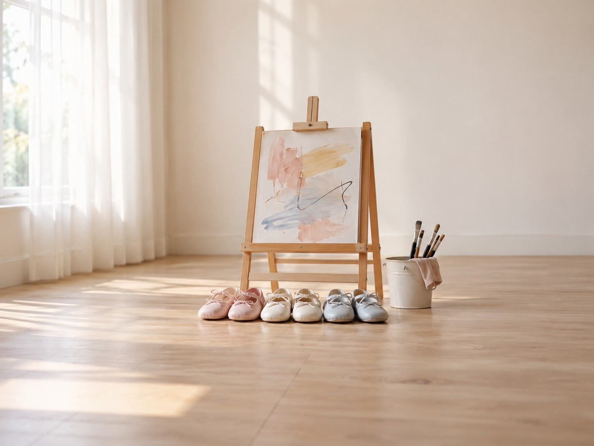

先備齊素材，再開始實作
跟著影片做
依影片順序取用完整提示詞、圖片與網頁。提示詞已含影片貼入的全文；AI 回覆可能不同，要對照影片練習時，請選下方指定的範例版本。
本區與下載套件可離線使用。按鈕若無法寫入剪貼簿，會顯示可手動複製的全文。圖片生成提示是另附的練習建議，原圖以下載檔為準。
-
素材 01 · 影片段落 005
開始製作：影片完整提示詞
整段複製到 AI 對話框，已包含店名、圖檔名稱與完整要求。
展開全文
你是網頁設計老師與前端工程師。 幫我做成一個「才藝教室網站」的單頁網站原型，做成可以直接打開的單一 index.html。 【網站目標】 招生頁、班級表、試上表單、名額狀態與報名流程 【使用者情境】 使用者第一次進入網站時，需要在手機上快速判斷這個服務是否適合自己，並能完成主要行動：讓家長理解課程、年齡分班、名額、試上與正式報名流程。 【必要區塊】 1. Hero 首頁：名稱、定位、主張、主要行動按鈕 2. 信任證據：真實照片、資歷、評論、規則或案例 3. 核心流程：讓家長理解課程、年齡分班、名額、試上與正式報名流程 4. 資料表單：姓名、聯絡方式、情境欄位、備註 5. 規則說明：價格、限制、取消或退款規則 6. 聯絡與後續：電話、LINE、Email、地圖或確認訊息 【資料欄位】 請在頁面中示範下列資料結構（對應表 14-2）： 1. CourseProgram：課程名稱、年齡範圍、程度、課程目標 2. ClassGroup：班級、老師、時段、名額上限、目前人數 3. TrialBooking：孩子年齡、家長聯絡方式、試上時段、狀態 4. Enrollment：學員、班級、報名日期、繳費狀態 5. WaitlistEntry：想報班級、候補順位、通知期限 6. ProgressNote：孩子表現、老師觀察、建議下一步 【設計要求】 1. 請使用清楚的 HTML結構與 CSS，做成單一 index.html。 2. 請使用 RWD，手機、平板、桌機都要可讀。 3. 請避免假評價、假資歷、假價格或過度承諾。 4. 表單與按鈕要有清楚的互動狀態，可以用靜態示意，不需要真的送出到伺服器。 5. 班級名額請依狀態顯示：未滿時顯示「可申請試上」、額滿時顯示「可登記候補」；並示範候補遞補規則——有人取消、名額空出時，把候補順位第一位標成「已通知」並給回覆期限。不要用「最後一席」這類話術。 可用的圖檔只有一張：images/hero.jpg，不要自己編其他圖檔名稱。 教室叫小步藝術教室，請一次給我完整的 index.html，放在同一個程式碼區塊裡。 班級示範資料請用：週六 10:00 初階舞蹈班，4–6 歲，林老師，名額 8 人，目前 8 人。請保留未修好的第一版：這個額滿班仍能正式報名，同資料重送會重複增加人數，待會用來測試後修正。不要新增評價、資歷、價格、活動。整份控制在12000字元以內。 候補通知後一律保留三日回覆期限；正文與程式碼都不得改成48小時。 回覆只保留一個完整HTML程式碼區塊，不要附框外說明、步驟清單、額外程式片段或其他碼框。
檔案核對碼（SHA-256）
e4407138867530a16230d69cf1ce878fa4a220540e17721171c308c853e4b862 -
素材 02 · 影片段落 009、010
修改前：課本範例網頁
影片改用這份範例練習。複製全文貼入預覽工具，或下載後開啟。此版刻意保留影片要修的問題。
展開全文
<!DOCTYPE html> <html lang="zh-Hant"> <head> <meta charset="utf-8"> <meta name="viewport" content="width=device-width, initial-scale=1"> <title>小步藝術教室｜新北市板橋區｜4–12 歲分齡才藝課．試上報名</title> <meta name="description" content="4–12 歲分齡團體才藝課。看班級、看名額，先預約試上；額滿的班可以登記候補，有人取消時依順位通知。"> <style> /* 小步藝術教室:成長冊。暖紙底、葡萄紫墨、蜜黃與蜜桃色塊。 班級照年齡分成三階,每一階只有「舞蹈或畫畫」二選一。 */ :root{ --paper:#fbf4e8; --card:#fffdf8; --ink:#2b2140; --mute:#54486b; --line:#e0cfb5; --grape:#5b3f9a; --grape-d:#43307a; --honey:#f4b942; --honey-l:#fbe3a6; --peach:#ffd9c4; --lilac:#e7ddf8; --ok-bg:#e0f1d9; --ok-ink:#1d4a25; --full-bg:#ffdcca; --full-ink:#7a2a0b; --sans:"PingFang TC","Noto Sans TC","Microsoft JhengHei","Heiti TC",system-ui,sans-serif; } *{box-sizing:border-box} html{scroll-behavior:smooth;scroll-padding-top:80px} body{margin:0;background:var(--paper);color:var(--ink);font:18px/1.75 var(--sans);-webkit-text-size-adjust:100%} h1,h2,h3,h4,p,ul,ol,dl,dd{margin:0} ul,ol{padding:0;list-style:none} a{color:inherit} button,input,select,textarea{font:inherit;color:inherit} .wrap{width:min(1160px,100% - 32px);margin-inline:auto} section{padding:76px 0} :focus-visible{outline:3px solid var(--grape);outline-offset:3px} .eyebrow{font-size:16px;font-weight:700;letter-spacing:.12em;color:var(--grape-d)} h2{font-size:clamp(32px,4.4vw,46px);line-height:1.22;font-weight:800;letter-spacing:.01em;margin:8px 0 14px} .sec-head p{max-width:38em;color:var(--mute)} .sec-head{margin-bottom:34px} .btn{display:inline-flex;align-items:center;justify-content:center;min-height:52px;padding:0 28px;border-radius:999px;border:2px solid transparent;font-weight:700;font-size:18px;text-decoration:none;cursor:pointer} .btn.primary{background:var(--grape);color:#fff} .btn.primary:hover{background:var(--grape-d)} .btn.ghost{border-color:var(--grape);color:var(--grape-d);background:transparent} .btn.ghost:hover{background:var(--lilac)} /* 頁首 */ .top{position:relative;top:0;z-index:5;background:rgba(251,244,232,.96);border-bottom:2px solid var(--line)} .top .wrap{display:flex;align-items:center;justify-content:space-between;gap:14px;min-height:66px} .brand{font-size:22px;font-weight:900;letter-spacing:.06em;text-decoration:none;color:var(--grape-d)} .top nav{display:none;gap:24px;font-size:17px} .top nav a{text-decoration:none;color:var(--mute);font-weight:600} .top nav a:hover{color:var(--ink)} .top .btn{min-height:44px;padding:0 20px;font-size:17px} @media(min-width:900px){.top nav{display:flex}} /* 首屏 */ .hero{padding:56px 0 72px;background:linear-gradient(180deg,var(--paper) 0,var(--peach) 100%)} .hero-grid{display:grid;gap:36px;align-items:center} .hero h1{font-size:clamp(46px,7vw,84px);line-height:1.05;font-weight:900;letter-spacing:.02em;color:var(--grape-d);margin:10px 0 16px} .claim{font-size:clamp(22px,2.6vw,28px);line-height:1.5;font-weight:700;max-width:22em} .age-ask{margin:26px 0 10px;font-weight:800} .age-chips{display:flex;flex-wrap:wrap;gap:10px} .chip{display:inline-flex;align-items:center;justify-content:center;min-height:48px;padding:0 22px;border-radius:14px;background:var(--honey);color:var(--ink);font-weight:800;text-decoration:none;border:2px solid var(--ink)} .chip:hover{background:var(--honey-l)} .hero-cta{display:flex;flex-wrap:wrap;gap:12px;margin-top:26px} .hero-art{position:relative;border-radius:30px;overflow:hidden;background:var(--lilac);border:3px solid var(--ink);aspect-ratio:4/3} .hero-art svg{position:absolute;inset:0;width:100%;height:100%} .hero-photo{position:absolute;inset:0;width:100%;height:100%;object-fit:cover} .hero-art .tag{position:absolute;z-index:2;padding:4px 14px;border-radius:999px;background:var(--card);color:var(--ink);border:2px solid var(--ink);font-weight:800;font-size:16px;line-height:1.5} .tag.t1{left:14px;bottom:14px}.tag.t2{right:14px;bottom:14px}.tag.t3{right:14px;top:14px} @media(min-width:900px){.hero-grid{grid-template-columns:1.05fr .95fr;gap:56px}} /* 信任 */ .trust{background:var(--card);border-block:2px solid var(--line)} .fears{display:grid;gap:18px} .fear{background:var(--paper);border:2px solid var(--ink);border-radius:22px;padding:24px 24px 26px} .fear .q{font-size:16px;font-weight:800;color:var(--grape-d);letter-spacing:.06em} .fear h3{font-size:24px;line-height:1.35;font-weight:800;margin:6px 0 8px} .fear p{color:var(--mute)} .notes{margin-top:30px;display:grid;gap:18px} .note-card{background:var(--honey-l);border:2px solid var(--ink);border-radius:22px;padding:24px} .note-card h3{font-size:22px;font-weight:800;margin-bottom:10px} .note-card dl{display:grid;gap:10px} .note-card dt{font-size:16px;font-weight:800;color:var(--grape-d)} .note-card dd{margin:0 0 4px} .never{background:var(--lilac);border:2px solid var(--ink);border-radius:22px;padding:24px} .never h3{font-size:22px;font-weight:800;margin-bottom:10px} .never li{padding:8px 0 8px 30px;position:relative;border-top:2px dashed var(--line)} .never li:first-child{border-top:0} .never li::before{content:"×";position:absolute;left:4px;top:6px;font-weight:900;color:var(--full-ink)} @media(min-width:900px){.fears{grid-template-columns:repeat(3,1fr)}.notes{grid-template-columns:1.2fr 1fr}} /* 班級:三階,每階二選一 */ #classes{display:grid;gap:26px} .grp{background:var(--card);border:3px solid var(--ink);border-radius:26px;padding:22px;display:grid;gap:18px} .grp:nth-child(1){background:var(--honey-l)} .grp:nth-child(2){background:var(--peach)} .grp:nth-child(3){background:var(--lilac)} .grp-h{display:flex;flex-wrap:wrap;align-items:baseline;gap:4px 8px} .grp-num{font-size:clamp(56px,9vw,96px);line-height:1;font-weight:900;color:var(--grape-d);letter-spacing:-.02em} .grp-unit{font-size:28px;font-weight:900;color:var(--grape-d)} .grp-sub{flex-basis:100%;font-weight:700;color:var(--ink)} .grp-body{display:grid;gap:16px} @media(min-width:900px){ .grp{grid-template-columns:260px 1fr;align-items:start;gap:26px;padding:26px} .grp-h{display:block} .grp-sub{display:block;margin-top:8px} .grp-num{display:inline-block;font-size:76px} .grp-body{grid-template-columns:1fr 1fr} .grp:nth-child(2){margin-left:56px} .grp:nth-child(3){margin-left:112px} } .class-card{background:var(--card);border:2px solid var(--ink);border-radius:20px;padding:20px;display:flex;flex-direction:column;gap:8px} .cc-tag{display:flex;gap:8px;flex-wrap:wrap} .cc-age,.cc-level{display:inline-block;padding:0 12px;border-radius:999px;font-size:16px;font-weight:800;line-height:1.7} .cc-age{background:var(--grape);color:#fff} .cc-level{background:var(--honey);color:var(--ink)} .cc-name{font-size:22px;line-height:1.35;font-weight:800} .cc-meta{color:var(--mute)} .seats{font-weight:700;padding:8px 12px;border-radius:12px;line-height:1.5} .seats.is-open{background:var(--ok-bg);color:var(--ok-ink)} .seats.is-full{background:var(--full-bg);color:var(--full-ink)} .cc-hold{font-size:16px;font-weight:700;color:var(--grape-d)} .acts{display:flex;flex-wrap:wrap;gap:10px;margin-top:6px} .act{min-height:46px;padding:0 18px;border-radius:12px;border:2px solid var(--ink);background:var(--card);font-weight:800;cursor:pointer;font-size:17px} .cta-trial{background:var(--grape);color:#fff;border-color:var(--grape)} .cta-trial:hover{background:var(--grape-d)} .cta-enroll:hover{background:var(--honey-l)} .cta-wait{background:var(--honey);color:var(--ink)} .act:disabled{background:#ece3d3;color:#5c5346;border-color:#b8a98f;cursor:not-allowed} .act[hidden]{display:none} /* 候補遞補 */ .wl{margin-top:44px;background:var(--card);border:3px solid var(--ink);border-radius:26px;padding:26px} .wl h3{font-size:clamp(26px,3vw,32px);line-height:1.3;font-weight:800;margin-bottom:8px} .wl > p{color:var(--mute);max-width:40em} .wl-bar{display:flex;flex-wrap:wrap;gap:12px;align-items:center;margin:20px 0 10px} .wl-bar select,.field select,.field input,.field textarea{min-height:48px;border:2px solid var(--ink);border-radius:12px;background:#fff;padding:8px 14px} .wl-seats{font-weight:700;padding:8px 14px;border-radius:12px;background:var(--lilac);margin-bottom:14px} .wl-btns{display:flex;flex-wrap:wrap;gap:10px;margin-bottom:16px} .wl-btns button{min-height:48px;padding:0 18px;border-radius:12px;border:2px solid var(--ink);background:var(--honey);font-weight:800;cursor:pointer;font-size:17px} .wl-btns button:disabled{background:#ece3d3;color:#5c5346;border-color:#b8a98f;cursor:not-allowed} .wl-note{min-height:3.4em;font-weight:700;color:var(--grape-d);margin-bottom:12px} table.wlt{width:100%;border-collapse:collapse} .wlt th,.wlt td{text-align:left;padding:10px 12px;border-bottom:2px solid var(--line);font-size:18px} .wlt th{font-size:16px;color:var(--mute)} .st-note{background:var(--honey);font-weight:800;border-radius:8px} .st-wait{font-weight:800;color:var(--grape-d)} .st-end{color:#54486b} @media(max-width:700px){ .wlt thead{display:none} .wlt tr{display:block;border:2px solid var(--line);border-radius:14px;padding:8px 12px;margin-bottom:10px} .wlt td{display:flex;justify-content:space-between;gap:12px;border:0;padding:4px 0} .wlt td::before{content:attr(data-h);font-size:16px;color:var(--mute)} .wlt td.wl-empty::before{content:none} } /* 流程 */ .flow{background:var(--card);border-block:2px solid var(--line)} .steps{display:grid;gap:10px;counter-reset:s} .steps li{counter-increment:s;background:var(--paper);border:2px solid var(--ink);border-radius:16px;padding:14px 18px 14px 58px;position:relative;font-weight:800;font-size:19px} .steps li::before{content:counter(s);position:absolute;left:14px;top:50%;transform:translateY(-50%);width:32px;height:32px;border-radius:50%;background:var(--grape);color:#fff;display:grid;place-items:center;font-size:17px} .steps li small{display:block;font-size:16px;font-weight:500;color:var(--mute)} .steps li.is-goal{background:var(--honey);} .branch{margin-top:20px;background:var(--lilac);border:2px solid var(--ink);border-radius:18px;padding:18px 22px} .branch b{display:block;margin-bottom:6px} .branch span{display:inline-block;margin:4px 8px 4px 0;padding:2px 14px;border-radius:999px;background:var(--card);border:2px solid var(--ink);font-weight:700} .states{margin-top:26px;display:grid;gap:14px} .states div{background:var(--paper);border:2px solid var(--line);border-radius:16px;padding:16px 18px} .states b{display:block;color:var(--grape-d);margin-bottom:4px} @media(min-width:900px){ .steps{grid-template-columns:repeat(6,1fr)} .steps li{padding:56px 14px 16px;text-align:center;font-size:18px} .steps li::before{left:50%;top:14px;transform:translateX(-50%)} .states{grid-template-columns:repeat(3,1fr)} } /* 表單 */ .apply-box{background:var(--peach);border:3px solid var(--ink);border-radius:28px;padding:26px} #mode-list{display:flex;flex-wrap:wrap;gap:10px;margin-bottom:18px} .mode{min-height:48px;padding:0 20px;border-radius:999px;border:2px solid var(--ink);background:var(--card);font-weight:800;cursor:pointer;font-size:17px} .mode.is-on{background:var(--grape);color:#fff;border-color:var(--grape)} #form-title{font-size:clamp(24px,3vw,30px);line-height:1.3;font-weight:800} #form-hint{color:var(--mute);margin:4px 0 18px} .fields{display:grid;gap:14px} .field{display:grid;gap:6px} .field[hidden]{display:none} .field label{font-weight:800} .field .sub{font-size:16px;color:var(--mute);font-weight:500} .field input,.field select,.field textarea{width:100%} .field textarea{min-height:88px;resize:vertical} @media(min-width:760px){.fields{grid-template-columns:1fr 1fr}.field.wide{grid-column:1/-1}} .form-btns{display:flex;flex-wrap:wrap;gap:12px;margin-top:20px;align-items:center} #submit{min-height:56px;padding:0 32px;border-radius:999px;border:2px solid var(--grape);background:var(--grape);color:#fff;font-weight:800;font-size:19px;cursor:pointer} #submit:hover{background:var(--grape-d)} #clear-form{min-height:48px;padding:0 20px;border-radius:999px;border:2px solid var(--ink);background:transparent;font-weight:700;cursor:pointer;font-size:17px} .rules-again{margin-top:18px;background:var(--honey-l);border:2px solid var(--ink);border-radius:14px;padding:12px 16px} .how{margin-top:16px;color:var(--mute)} #result{margin-top:22px;border-radius:18px;padding:18px 22px;border:2px solid var(--ink);background:var(--card)} #result[data-kind="ok"]{background:var(--ok-bg);color:var(--ok-ink);border-color:var(--ok-ink)} #result[data-kind="blocked"]{background:var(--full-bg);color:var(--full-ink);border-color:var(--full-ink)} .r-head{font-size:22px;font-weight:900;margin-bottom:4px} .r-line{margin-top:4px} /* 規則 */ .rules-grid{display:grid;gap:18px} .rule{background:var(--card);border:2px solid var(--ink);border-radius:22px;padding:24px} .rule h3{font-size:24px;font-weight:800;margin-bottom:8px} .rule p{color:var(--mute)} .price-line{margin-top:22px;background:var(--honey-l);border:2px solid var(--ink);border-radius:18px;padding:18px 22px;font-weight:600} @media(min-width:900px){.rules-grid{grid-template-columns:repeat(3,1fr)}} /* 聯絡 */ .contact{background:var(--grape-d);color:#fff} .contact h2{color:#fff} .contact .eyebrow{color:var(--honey-l)} .contact-grid{display:grid;gap:14px} .contact-grid div{background:rgba(255,255,255,.1);border:2px solid rgba(255,255,255,.55);border-radius:18px;padding:16px 20px} .contact-grid b{display:block;font-size:16px;letter-spacing:.08em;color:var(--honey-l)} .contact-grid span{font-size:20px;font-weight:700;overflow-wrap:anywhere} .contact p.after{margin-top:22px;max-width:40em} @media(min-width:900px){.contact-grid{grid-template-columns:repeat(4,1fr)}} details.model{margin-top:0;background:var(--card);border-top:2px solid var(--line)} details.model summary{cursor:pointer;font-weight:800;padding:22px 0;list-style:none} details.model summary::before{content:"＋ ";color:var(--grape)} details.model[open] summary::before{content:"－ "} #model-body{display:grid;gap:12px;padding-bottom:26px} .obj{display:grid;gap:2px;background:var(--paper);border:2px solid var(--line);border-radius:14px;padding:12px 16px} .obj b{color:var(--grape-d);font-size:18px} .obj-n{font-weight:700} @media(min-width:900px){#model-body{grid-template-columns:repeat(3,1fr)}} footer{background:var(--ink);color:#fff;padding:26px 0;font-size:16px} footer .wrap{display:flex;flex-wrap:wrap;gap:8px 20px;justify-content:space-between} @media(max-width:600px){section{padding:56px 0}.hero{padding:36px 0 52px}} @media(prefers-reduced-motion:reduce){html{scroll-behavior:auto}} </style> </head> <body> <header class="top"> <div class="wrap"> <a class="brand" href="#top">小步藝術教室</a> <nav aria-label="主選單"><a href="#trust">為什麼放心</a><a href="#classes-sec">班級名額</a><a href="#flow">試上到報名</a><a href="#apply">預約</a><a href="#rules">規則</a><a href="#contact">聯絡</a></nav> <a class="btn primary" href="#apply">預約試上</a> </div> </header> <main> <section class="hero" id="top"> <div class="wrap hero-grid"> <div class="hero-copy"> <p class="eyebrow">4–12 歲分齡團體才藝課</p> <h1>小步藝術教室</h1> <p class="claim">先看孩子幾歲，再選舞蹈或畫畫。每一班幾人、剩幾位，都寫得出來。</p> <p class="age-ask">孩子幾歲？</p> <div class="age-chips"> <a class="chip" href="#grp-b4-6">4–6 歲</a><a class="chip" href="#grp-b7-9">7–9 歲</a><a class="chip" href="#grp-b10-12">10–12 歲</a> </div> <div class="hero-cta"> <a class="btn primary" href="#apply">預約試上</a> <a class="btn ghost" href="#classes-sec">查看班級名額</a> </div> </div> <div class="hero-art" aria-hidden="true"> <svg viewBox="0 0 400 300" preserveAspectRatio="xMidYMid slice" focusable="false"> <rect width="400" height="300" fill="#e7ddf8"/> <circle cx="318" cy="70" r="34" fill="#f4b942"/> <rect x="0" y="212" width="400" height="88" fill="#5b3f9a"/> <rect x="24" y="170" width="112" height="130" rx="10" fill="#ffd9c4" stroke="#2b2140" stroke-width="4"/> <rect x="144" y="124" width="112" height="176" rx="10" fill="#f4b942" stroke="#2b2140" stroke-width="4"/> <rect x="264" y="78" width="112" height="222" rx="10" fill="#fffdf8" stroke="#2b2140" stroke-width="4"/> <g fill="#2b2140"><rect x="46" y="140" width="10" height="20" rx="5"/><rect x="66" y="128" width="10" height="32" rx="5"/><rect x="86" y="146" width="10" height="14" rx="5"/></g> <g fill="#5b3f9a"><rect x="170" y="94" width="10" height="20" rx="5"/><rect x="190" y="82" width="10" height="32" rx="5"/><rect x="210" y="100" width="10" height="14" rx="5"/><rect x="230" y="88" width="10" height="26" rx="5"/></g> <g fill="#f4b942" stroke="#2b2140" stroke-width="3"><rect x="288" y="42" width="10" height="24" rx="5"/><rect x="308" y="30" width="10" height="36" rx="5"/><rect x="328" y="46" width="10" height="20" rx="5"/><rect x="348" y="36" width="10" height="30" rx="5"/></g> </svg> <img class="hero-photo" src="images/hero.jpg" alt="" onerror="this.remove()"> <span class="tag t1">4–6 歲</span><span class="tag t2">7–9 歲</span><span class="tag t3">10–12 歲</span> </div> </div> </section> <section class="trust" id="trust"> <div class="wrap"> <div class="sec-head"> <p class="eyebrow">家長會擔心的三件事</p> <h2>先把答案寫在前面</h2> <p>家長站在門口，多半不是在判斷課好不好，而是在問「我讓孩子來這裡，我會是個什麼樣的爸媽」。所以進步、老師、第一堂課，我們都先攤開。</p> </div> <div class="fears"> <article class="fear"><p class="q">怕看不到進步</p><h3>每堂課後，寫得出具體的進步</h3><p>老師寫觀察，不寫「今天很好」。例如「連續保持八拍穩定」，家長看得到孩子往前了一小步。</p></article> <article class="fear"><p class="q">怕環境不安全</p><h3>老師的資料，我們主動列出</h3><p>學歷、教師認證與無犯罪紀錄證明，試上當天可向櫃台索閱影本。網站上介紹的老師，就是實際上課的老師。</p></article> <article class="fear"><p class="q">怕選錯班</p><h3>第一堂課，家長可以旁觀</h3><p>開放觀察窗：試上那一堂，家長可以在窗邊看孩子怎麼上課，再決定適不適合，不用當場決定。</p></article> </div> <div class="notes"> <article class="note-card"> <h3>試上後的回饋單，有這四欄</h3> <dl> <div><dt>孩子狀態</dt><dd>前 15 分鐘較緊張，後半段能跟上節奏</dd></div> <div><dt>老師觀察</dt><dd>對節拍反應快，但需要練習等待輪流</dd></div> <div><dt>建議班級</dt><dd>週六初階 A 班，先試 4 堂</dd></div> <div><dt>家長下一步</dt><dd>三日內回覆是否轉正式，逾期釋出名額</dd></div> </dl> </article> <article class="never"> <h3>我們不做的三件事</h3> <ul> <li>不喊「最後一席」，也不做「今天決定才打折」。額滿就老實寫「可登記候補」。</li> <li>不讓沒列在網站上的人代課。介紹的老師和上課的老師是同一位。</li> <li>不把退費藏在小字裡。退費與停課規則，就寫在本頁的規則說明。</li> </ul> </article> </div> </div> </section> <section id="classes-sec"> <div class="wrap"> <div class="sec-head"> <p class="eyebrow">班級與名額</p> <h2>三個年齡層，各選一個班</h2> <p>每個年齡層只有兩個班，家長只需要做「舞蹈或畫畫」的決定。名額是可以驗證的資訊：上限幾人、目前幾人、能試上還是只能候補，都寫在班級卡上。</p> </div> <div id="classes" data-group="age"></div> <div class="wl" id="waitlist"> <h3>有人取消時，名額怎麼補</h3> <p>班級額滿時，新的意願只能進候補。有一位已入班學員取消、名額空出來，候補第 1 順位就會標成「已通知」，並有三日回覆期限；逾期沒回覆，就順移給下一位。按下面的按鈕，可以看名額和候補怎麼連動。</p> <div class="wl-bar"><label for="wl-class"><b>看哪一班</b></label><select id="wl-class"></select></div> <p class="wl-seats" id="wl-seats"></p> <div class="wl-btns"> <button type="button" id="btn-cancel">一位已入班學員取消</button> <button type="button" id="btn-overdue">回覆期限到了，沒有回覆</button> <button type="button" id="btn-accept">已通知的家長回覆要報名</button> </div> <p class="wl-note" id="wl-note" aria-live="polite"></p> <table class="wlt" id="wl-table"><thead><tr><th>順位</th><th>家長</th><th>孩子</th><th>狀態</th><th>回覆期限</th></tr></thead><tbody></tbody></table> </div> </div> </section> <section class="flow" id="flow"> <div class="wrap"> <div class="sec-head"> <p class="eyebrow">試上到正式報名</p> <h2>你現在走到哪一步，頁面上看得到</h2> <p>先試上，老師看過孩子之後，再建議班級；額滿的班先登記候補。每一步的狀態，都是家長可以查到的字。</p> </div> <ol class="steps"> <li>瀏覽課程<small>先看年齡層與班級</small></li> <li>申請試上<small>狀態：已申請</small></li> <li>安排試上<small>狀態：已排定</small></li> <li>已試上<small>老師寫回饋單</small></li> <li>建議班級<small>老師依觀察推薦</small></li> <li class="is-goal">正式報名<small>待繳費 → 已入班</small></li> </ol> <div class="branch"><b>已試上之後，也可能走到這三個終點</b><span>候補</span><span>不適合</span><span>再觀察</span></div> <div class="states"> <div><b>試上</b>已申請、已排定、已完成、未出席、已取消</div> <div><b>正式報名</b>待繳費、已入班、已取消、暫停</div> <div><b>候補</b>候補中、已通知、逾期未回覆、轉正式</div> </div> </div> </section> <section id="apply"> <div class="wrap"> <div class="sec-head"> <p class="eyebrow">預約與報名</p> <h2>試上、正式報名、候補，是三件不同的事</h2> <p>選一個班，選要做哪一件事。額滿的班只能登記候補，不會多收一個人。</p> </div> <div class="apply-box"> <div id="mode-list" role="group" aria-label="要做哪一件事"> <button type="button" class="mode" data-mode="trial" aria-pressed="true">預約試上</button> <button type="button" class="mode" data-mode="enroll" aria-pressed="false">正式報名</button> <button type="button" class="mode" data-mode="wait" aria-pressed="false">登記候補</button> </div> <h3 id="form-title"></h3> <p id="form-hint"></p> <form id="apply-form"> <div class="fields"> <div class="field wide"><label for="f-class">班級</label><select id="f-class" required></select></div> <div class="field"><label for="f-child">孩子的小名</label><input id="f-child" name="child" required maxlength="12" autocomplete="off"></div> <div class="field"><label for="f-age">孩子幾歲</label><select id="f-age" name="age" required><option value="">請選年齡</option><option>4</option><option>5</option><option>6</option><option>7</option><option>8</option><option>9</option><option>10</option><option>11</option><option>12</option></select></div> <div class="field"><label for="f-name">家長姓名</label><input id="f-name" name="name" required maxlength="12" autocomplete="name"></div> <div class="field"><label for="f-phone">手機</label><input id="f-phone" name="phone" required inputmode="numeric" pattern="09[0-9]{8}" placeholder="0912345678" autocomplete="tel"><span class="sub">十碼，09 開頭</span></div> <div class="field wide" id="trial-row"><label for="f-trial">試上時段</label><select id="f-trial"></select></div> <div class="field wide"><label for="f-note">備註</label><textarea id="f-note" name="note" maxlength="200"></textarea><span class="sub">例如：孩子慢熟、有沒有過敏、想坐哪一區</span></div> </div> <p class="rules-again"><b>送出前再看一次：</b>補課：上課前 24 小時請假，每期可補 2 次。退費：開課前學費全額退還；教材費與活動費的處理方式，都寫在下方的規則說明。</p> <div class="form-btns"><button type="submit" id="submit">送出試上申請</button><button type="button" id="clear-form">清空表單</button></div> </form> <p class="how">送出後，老師會電話確認；試上時間、繳費方式都以電話確認為準。</p> <div id="result" role="status" aria-live="polite" hidden></div> </div> </div> </section> <section id="rules" class="flow"> <div class="wrap"> <div class="sec-head"> <p class="eyebrow">規則說明</p> <h2>名額、補課、退費，報名前先看清楚</h2> <p>常見的爭議不是頁面好不好看，而是報名後規則說不清楚。三件事先寫明：</p> </div> <div class="rules-grid"> <article class="rule"><h3>班級名額</h3><p>每班上限 6 至 8 人，寫在班級卡上。目前可試上或可候補，依目前人數即時顯示。額滿登記候補，依送出先後排順位。</p></article> <article class="rule"><h3>補課</h3><p>上課前 24 小時提出請假。每期可補 2 次，限補同年齡層、同程度的班。</p></article> <article class="rule"><h3>退費</h3><p>開課前：學費全額退還。開課後：扣除已上堂數，退還未上的堂數。教材費：已領取的教材不退，未領取者全額退還。活動費（成果發表會）：活動前 14 天以前可退，之後依已支出的成本處理，報名前就會寫明。</p></article> </div> <p class="price-line">學費、教材費、成果發表會活動費分開列出，各班報名前逐項公告，不會併在學費裡。試上費用也以班級公告為準；試上不用繳正式學費，正式繳費是另一個步驟。</p> </div> </section> <section class="contact" id="contact"> <div class="wrap"> <div class="sec-head"> <p class="eyebrow">聯絡與後續</p> <h2>送出之後，我們這樣接手</h2> </div> <div class="contact-grid"> <div><b>電話</b><span>02-0000-0000<br>週三至週日 10:00–19:00</span></div> <div><b>LINE</b><span>@example-xiaobu</span></div> <div><b>Email</b><span>xiaobu@example.com</span></div> <div><b>位置</b><span>新北市板橋區<br>確認試上後，提供門牌與交通方式</span></div> </div> <p class="after">送出後一個工作天內，老師會打電話確認。沒接到會留言，請用 LINE 或電話回覆。試上完成後，回饋單三日內給你。</p> </div> </section> <div class="wrap"><details class="model"><summary>資料模型（六個資料物件）</summary><div id="model-body"></div></details></div> </main> <footer><div class="wrap"><span>小步藝術教室</span><span>課程、名額與費用以教室公告及老師電話確認為準。© 2026</span></div></footer> <script> (function () { 'use strict'; /* ---- 資料:課程年齡層、班級(ClassGroup)、初始候補(WaitlistEntry) ---- */ var TODAY = Date.UTC(2026, 9, 6); // 2026/10/06 週二 var WEEK = ['日', '一', '二', '三', '四', '五', '六']; var BANDS = { '4-6': { label: '4–6 歲', min: 4, max: 6 }, '7-9': { label: '7–9 歲', min: 7, max: 9 }, '10-12': { label: '10–12 歲', min: 10, max: 12 } }; var CLASSES = [ { id: 'c1', name: '週六 10:00 初階舞蹈班', course: '兒童舞蹈', band: '4-6', level: '初階', teacher: '林老師', day: 6, time: '10:00–11:00', start: '10:00', cap: 8, base: 8 }, { id: 'c2', name: '週三 16:30 創意畫畫班', course: '兒童畫畫', band: '4-6', level: '初階', teacher: '陳老師', day: 3, time: '16:30–17:30', start: '16:30', cap: 6, base: 6 }, { id: 'c3', name: '週六 11:30 節奏舞蹈班', course: '兒童舞蹈', band: '7-9', level: '初階', teacher: '林老師', day: 6, time: '11:30–12:30', start: '11:30', cap: 8, base: 5 }, { id: 'c4', name: '週四 16:30 素描入門班', course: '兒童畫畫', band: '7-9', level: '初階', teacher: '陳老師', day: 4, time: '16:30–17:30', start: '16:30', cap: 6, base: 4 }, { id: 'c5', name: '週日 10:00 進階舞蹈班', course: '兒童舞蹈', band: '10-12', level: '進階', teacher: '黃老師', day: 0, time: '10:00–11:30', start: '10:00', cap: 8, base: 4 }, { id: 'c6', name: '週五 18:30 水彩創作班', course: '兒童畫畫', band: '10-12', level: '進階', teacher: '陳老師', day: 5, time: '18:30–20:00', start: '18:30', cap: 6, base: 3 } ]; var state = { enrollments: [], trials: [], waitlist: [ { cid: 'c1', who: '周家長', age: 5, child: '', phone: '', state: '候補中', deadline: '' }, { cid: 'c1', who: '吳家長', age: 4, child: '', phone: '', state: '候補中', deadline: '' } ], seq: { trial: 0, enroll: 0, wait: 0 }, form: { cid: 'c1', mode: 'trial' } }; /* ---- 小工具 ---- */ function $(id) { return document.getElementById(id); } function mk(tag, cls, text) { var e = document.createElement(tag); if (cls) { e.className = cls; } if (text != null) { e.textContent = text; } return e; } function byId(id) { return CLASSES.filter(function (c) { return c.id === id; })[0]; } function pad(n, w) { n = String(n); while (n.length < w) { n = '0' + n; } return n; } function dateLabel(ms) { var d = new Date(ms); return pad(d.getUTCMonth() + 1, 2) + '/' + pad(d.getUTCDate(), 2) + '(' + WEEK[d.getUTCDay()] + ')'; } var DEADLINE = dateLabel(TODAY + 3 * 864e5) + ' 18:00 前'; /* ---- 名額狀態機:目前人數、保留名額、是否額滿 ---- */ function activeEnroll(c) { return state.enrollments.filter(function (e) { return e.cid === c.id && (e.state === '待繳費' || e.state === '已入班'); }); } function nowCount(c) { return c.base + activeEnroll(c).length; } function waitOf(c) { return state.waitlist.filter(function (w) { return w.cid === c.id; }); } function queueOf(c) { return waitOf(c).filter(function (w) { return w.state === '候補中' || w.state === '已通知'; }); } function heldCount(c) { return waitOf(c).filter(function (w) { return w.state === '已通知'; }).length; } function isFull(c) { return nowCount(c) + heldCount(c) >= c.cap; } function position(w) { return queueOf(byId(w.cid)).indexOf(w) + 1; } function seatText(c) { return '名額 ' + c.cap + ' 人，目前 ' + nowCount(c) + ' 人，' + (isFull(c) ? '可登記候補' : '可申請試上'); } /* 名額空出:候補中的第一順位改成「已通知」並給回覆期限;沒人排隊就直接開放 */ function notifyNext(c) { var next = waitOf(c).filter(function (w) { return w.state === '候補中'; })[0]; if (!next) { return null; } next.state = '已通知'; next.deadline = DEADLINE; return next; } /* ---- 班級卡 ---- */ function buildCard(c) { var full = isFull(c); var card = mk('article', 'class-card'); card.setAttribute('data-cid', c.id); card.setAttribute('data-full', String(full)); card.setAttribute('data-band', c.band); card.setAttribute('data-day', String(c.day)); var tag = mk('p', 'cc-tag'); tag.appendChild(mk('span', 'cc-age', BANDS[c.band].label)); tag.appendChild(mk('span', 'cc-level', c.level)); card.appendChild(tag); card.appendChild(mk('h3', 'cc-name', c.name)); card.appendChild(mk('p', 'cc-meta', c.course + '・' + c.teacher + '・' + c.time)); card.appendChild(mk('p', 'seats' + (full ? ' is-full' : ' is-open'), seatText(c))); var held = heldCount(c); if (held > 0) { card.appendChild(mk('p', 'cc-hold', '另有 ' + held + ' 個名額保留給候補家長回覆')); } var acts = mk('div', 'acts'); var bTrial = mk('button', 'cta-trial act', '預約試上'); var bEnroll = mk('button', 'cta-enroll act', '正式報名'); var bWait = mk('button', 'cta-wait act', '登記候補'); [bTrial, bEnroll, bWait].forEach(function (b, i) { b.type = 'button'; b.setAttribute('data-act', ['trial', 'enroll', 'wait'][i]); }); bWait.hidden = !full; acts.appendChild(bTrial); acts.appendChild(bEnroll); acts.appendChild(bWait); card.appendChild(acts); return card; } function renderClasses() { var box = $('classes'); var mode = box.getAttribute('data-group'); box.textContent = ''; var groups = []; if (mode === 'day') { [3, 4, 5, 6, 0].forEach(function (d) { var list = CLASSES.filter(function (c) { return c.day === d; }); if (list.length) { groups.push({ key: 'd' + d, head: '週' + WEEK[d], sub: '', list: list }); } }); } else { Object.keys(BANDS).forEach(function (k) { var list = CLASSES.filter(function (c) { return c.band === k; }); var courses = list.map(function (c) { return c.course; }).filter(function (v, i, a) { return a.indexOf(v) === i; }); groups.push({ key: 'b' + k, head: BANDS[k].label, num: k.replace('-', '–'), sub: list.length + ' 個班：' + courses.join('或') + '，二選一', list: list }); }); } groups.forEach(function (g) { var sec = mk('div', 'grp'); sec.id = 'grp-' + g.key; sec.setAttribute('data-key', g.key); var h = mk('div', 'grp-h'); if (g.num) { var big = mk('span', 'grp-num', g.num); h.appendChild(big); h.appendChild(mk('span', 'grp-unit', '歲')); } else { h.appendChild(mk('span', 'grp-day', g.head)); } if (g.sub) { h.appendChild(mk('span', 'grp-sub', g.sub)); } sec.appendChild(h); var body = mk('div', 'grp-body'); g.list.forEach(function (c) { body.appendChild(buildCard(c)); }); sec.appendChild(body); box.appendChild(sec); }); } /* 首屏名額看板(只有版面需要時才存在) */ function renderBoard() { var b = $('hero-board'); if (!b) { return; } b.textContent = ''; CLASSES.forEach(function (c) { var li = mk('li', 'hb-row'); li.setAttribute('data-full', String(isFull(c))); li.appendChild(mk('span', 'hb-name', c.name)); li.appendChild(mk('span', 'hb-n', nowCount(c) + '／' + c.cap)); li.appendChild(mk('span', 'hb-st', isFull(c) ? '可登記候補' : '可申請試上')); b.appendChild(li); }); } /* ---- 候補與遞補 ---- */ function renderWait() { var sel = $('wl-class'); var c = byId(sel.value); var tb = $('wl-table').querySelector('tbody'); tb.textContent = ''; var q = queueOf(c); var rest = waitOf(c).filter(function (w) { return q.indexOf(w) < 0; }); q.concat(rest).forEach(function (w) { var tr = document.createElement('tr'); tr.setAttribute('data-state', w.state); var p = position(w); [p > 0 ? '第 ' + p + ' 順位' : '—', w.who, w.age + ' 歲', w.state, w.deadline || '—'].forEach(function (t, i) { var td = mk('td', null, t); td.setAttribute('data-h', ['順位', '家長', '孩子', '狀態', '回覆期限'][i]); if (i === 3) { td.className = 'st st-' + (w.state === '已通知' ? 'note' : w.state === '候補中' ? 'wait' : 'end'); } tr.appendChild(td); }); tb.appendChild(tr); }); if (!tb.children.length) { var tr0 = document.createElement('tr'); var td0 = mk('td', 'wl-empty', '這個班目前沒有人候補。'); td0.colSpan = 5; tr0.appendChild(td0); tb.appendChild(tr0); } $('wl-seats').textContent = c.name + '：' + seatText(c) + (heldCount(c) ? '（' + heldCount(c) + ' 個名額保留給候補家長回覆）' : ''); $('wl-seats').setAttribute('data-full', String(isFull(c))); $('btn-cancel').disabled = nowCount(c) <= 0; $('btn-overdue').disabled = heldCount(c) === 0; $('btn-accept').disabled = heldCount(c) === 0; } function wlSay(t) { $('wl-note').textContent = t; } function doCancel() { var c = byId($('wl-class').value); var mine = activeEnroll(c); if (mine.length) { mine[mine.length - 1].state = '已取消'; } else { c.base -= 1; } var n = notifyNext(c); wlSay(n ? '一位已入班學員取消，名額空出。候補第 1 順位（' + n.who + '）已標成「已通知」，請在 ' + n.deadline + '回覆；這段時間名額保留給他，不對外開放。' : '一位已入班學員取消，名額空出。沒有人在候補，這個名額直接開放試上與報名。'); renderAll(); } function doOverdue() { var c = byId($('wl-class').value); var w = waitOf(c).filter(function (x) { return x.state === '已通知'; })[0]; if (!w) { return; } w.state = '逾期未回覆'; var n = notifyNext(c); wlSay(n ? w.who + ' 逾期未回覆，順位往後移。下一位（' + n.who + '）已標成「已通知」，請在 ' + n.deadline + '回覆。' : w.who + ' 逾期未回覆，後面沒有人候補，名額開放試上與報名。'); renderAll(); } function doAccept() { var c = byId($('wl-class').value); var w = waitOf(c).filter(function (x) { return x.state === '已通知'; })[0]; if (!w) { return; } w.state = '轉正式'; state.seq.enroll += 1; state.enrollments.push({ id: 'EN-' + c.id.toUpperCase() + '-' + pad(state.seq.enroll, 3), cid: c.id, child: w.who + '的孩子', age: w.age, name: w.who, phone: w.phone, state: '待繳費' }); wlSay(w.who + ' 回覆要報名，狀態改成「轉正式」，正式報名進入「待繳費」，目前人數加一。'); renderAll(); } /* ---- 表單:預約試上、正式報名、候補是三個不同動作 ---- */ var MODES = { trial: { title: '預約試上', submit: '送出試上申請', hint: '先讓孩子上一堂，試上不等於正式報名。' }, enroll: { title: '正式報名', submit: '送出正式報名', hint: '已試上、老師建議這一班的家長，用這一項。' }, wait: { title: '登記候補', submit: '登記候補', hint: '這班額滿了，登記後依先後順位，有名額空出會通知。' } }; function syncForm() { var c = byId(state.form.cid); var m = MODES[state.form.mode]; $('f-class').value = c.id; [].forEach.call(document.querySelectorAll('#mode-list .mode'), function (b) { var on = b.getAttribute('data-mode') === state.form.mode; b.classList.toggle('is-on', on); b.setAttribute('aria-pressed', String(on)); }); $('form-title').textContent = m.title + '：' + c.name; $('form-hint').textContent = m.hint; $('submit').textContent = m.submit; $('trial-row').hidden = state.form.mode !== 'trial'; var ft = $('f-trial'); var keep = ft.value; ft.textContent = ''; [2, 9].forEach(function (add) { var t = TODAY + add * 864e5; var d = new Date(t); while (d.getUTCDay() !== c.day) { t += 864e5; d = new Date(t); } var o = mk('option', null, dateLabel(t) + ' ' + c.start); o.value = dateLabel(t) + ' ' + c.start; ft.appendChild(o); }); if (keep) { ft.value = keep; } } function openForm(cid, mode) { state.form.cid = cid; state.form.mode = mode; syncForm(); $('apply').scrollIntoView(); } function switchMode(mode) { state.form.mode = mode; syncForm(); } function showResult(kind, head, lines) { var r = $('result'); r.hidden = false; r.setAttribute('data-kind', kind); r.textContent = ''; r.appendChild(mk('p', 'r-head', head)); lines.forEach(function (t) { r.appendChild(mk('p', 'r-line', t)); }); } function block(reason) { showResult('blocked', '這次沒有送出', [reason]); } function findDup(mode, c, phone, child) { var pool = mode === 'trial' ? state.trials : mode === 'enroll' ? state.enrollments : state.waitlist; return pool.filter(function (x) { var live = x.state !== '已取消' && x.state !== '逾期未回覆' && x.state !== '轉正式'; return live && x.cid === c.id && x.phone === phone && x.child === child; })[0]; } function dupMsg(mode, c, hit) { var where = mode === 'wait' ? '候補第 ' + position(hit) + ' 順位' : mode === 'trial' ? '「' + hit.state + '」的試上申請' : '「' + hit.state + '」的正式報名'; return hit.child + ' 已經在「' + c.name + '」' + where + '，不用再按一次。' + (mode === 'wait' ? '多按不會讓順位往前，也不會多占一個名額。' : '多按不會多收一筆。'); } function onSubmit(ev) { ev.preventDefault(); var form = $('apply-form'); if (!form.checkValidity()) { form.reportValidity(); return; } var cls = byId($('f-class').value); var mode = state.form.mode; var child = $('f-child').value.trim(); var age = parseInt($('f-age').value, 10); var name = $('f-name').value.trim(); var phone = $('f-phone').value.trim(); var band = BANDS[cls.band]; if (age < band.min || age > band.max) { block(cls.name + '收 ' + band.label + '的孩子，' + age + ' 歲的孩子請選對應年齡層的班。'); return; } if (mode === 'wait' && !isFull(cls)) { block('這個班還有名額，不用候補，請改選預約試上或正式報名。'); switchMode('trial'); return; } var dup = findDup(mode, cls, phone, child); if (mode === 'trial') { state.seq.trial += 1; var t = { id: 'TB-' + cls.id.toUpperCase() + '-' + pad(state.seq.trial, 3), cid: cls.id, child: child, age: age, name: name, phone: phone, slot: $('f-trial').value, state: '已申請' }; state.trials.push(t); showResult('ok', '已收到試上申請', ['編號 ' + t.id + '，狀態：已申請。', child + '（' + age + ' 歲）・' + cls.name + '・' + t.slot, '下一步：老師會在一個工作天內打電話給 ' + name + '，確認試上時間，排定後狀態改成「已排定」。試上後三日內請回覆是否轉正式報名。']); } else if (mode === 'enroll') { state.seq.enroll += 1; var e = { id: 'EN-' + cls.id.toUpperCase() + '-' + pad(state.seq.enroll, 3), cid: cls.id, child: child, age: age, name: name, phone: phone, state: '待繳費' }; state.enrollments.push(e); showResult('ok', '已收到正式報名', ['編號 ' + e.id + '，狀態：待繳費，名額已幫 ' + child + ' 保留。', cls.name + '，目前 ' + nowCount(cls) + ' 人（上限 ' + cls.cap + ' 人）。', '下一步：老師會電話通知繳費方式；繳費後狀態改成「已入班」。']); } else { state.seq.wait += 1; var w = { id: 'WL-' + cls.id.toUpperCase() + '-' + pad(state.seq.wait, 3), cid: cls.id, who: name.charAt(0) + '家長', child: child, age: age, name: name, phone: phone, state: '候補中', deadline: '' }; state.waitlist.push(w); showResult('ok', '已登記候補', ['編號 ' + w.id + '，狀態：候補中，目前是第 ' + position(w) + ' 順位。', child + '（' + age + ' 歲）・' + cls.name, '下一步：有人取消、名額空出時，第 1 順位會標成「已通知」，並有三日回覆期限；逾期未回覆就順移給下一位。']); } renderAll(); } /* ---- 資料模型:六個物件與目前筆數 ---- */ var MODEL = [ ['CourseProgram', '課程名稱、年齡範圍、程度、課程目標', function () { return CLASSES.map(function (c) { return c.course + c.level; }).filter(function (v, i, a) { return a.indexOf(v) === i; }).length + ' 種課程'; }], ['ClassGroup', '班級、老師、時段、名額上限、目前人數', function () { return CLASSES.length + ' 個班'; }], ['TrialBooking', '孩子年齡、家長聯絡方式、試上時段、狀態', function () { return state.trials.length + ' 筆'; }], ['Enrollment', '學員、班級、報名日期、繳費狀態', function () { return state.enrollments.length + ' 筆'; }], ['WaitlistEntry', '想報班級、候補順位、通知期限', function () { return state.waitlist.length + ' 筆'; }], ['ProgressNote', '孩子表現、老師觀察、建議下一步', function () { return '試上後 3 日內提供'; }] ]; function renderModel() { var box = $('model-body'); box.textContent = ''; MODEL.forEach(function (m) { var d = mk('div', 'obj'); d.setAttribute('data-obj', m[0]); d.appendChild(mk('b', null, m[0])); d.appendChild(mk('span', 'obj-f', m[1])); d.appendChild(mk('span', 'obj-n', m[2]())); box.appendChild(d); }); } function renderAll() { renderClasses(); renderBoard(); renderWait(); renderModel(); } /* ---- 接線 ---- */ function init() { var fc = $('f-class'), wc = $('wl-class'); CLASSES.forEach(function (c) { var o = mk('option', null, c.name + '・' + BANDS[c.band].label); o.value = c.id; fc.appendChild(o); var o2 = mk('option', null, c.name); o2.value = c.id; wc.appendChild(o2); }); wc.value = 'c1'; $('classes').addEventListener('click', function (ev) { var b = ev.target.closest('button.act'); if (!b || b.disabled) { return; } openForm(b.closest('.class-card').getAttribute('data-cid'), b.getAttribute('data-act')); }); [].forEach.call(document.querySelectorAll('#mode-list .mode'), function (b) { b.addEventListener('click', function () { switchMode(b.getAttribute('data-mode')); }); }); fc.addEventListener('change', function () { state.form.cid = fc.value; syncForm(); }); wc.addEventListener('change', renderWait); $('apply-form').addEventListener('submit', onSubmit); $('clear-form').addEventListener('click', function () { $('apply-form').reset(); $('result').hidden = true; syncForm(); }); $('btn-cancel').addEventListener('click', doCancel); $('btn-overdue').addEventListener('click', doOverdue); $('btn-accept').addEventListener('click', doAccept); renderAll(); syncForm(); } init(); })(); </script> <style id="site-audit-fix"> img,video{max-width:100%} select{max-width:100%;text-overflow:ellipsis} a[href^="tel:"],a[href^="mailto:"],span.num,a.num,b.num,strong.num,time{white-space:nowrap} @media (max-width:760px){ .field select{padding-left:10px;padding-right:28px;font-size:15px} .wrap{width:calc(100% - 40px)} .rules-again{padding-left:20px;padding-right:20px} } h2,h3{word-break:keep-all;overflow-wrap:anywhere} </style> <style id="k22-legibility">h1{line-height:1.4;padding:6px 0 10px}.cc-age,.cc-level{padding:6px 12px;line-height:1.6}.grp-num{line-height:1.2;padding:8px 0 12px}.tag{line-height:1.8;padding:4px 10px}.seats,.wl-seats{line-height:1.6;padding:12px 16px}.cta-enroll,.cta-wait,.cta-trial{line-height:1.6;padding:12px 18px}.class-card{padding:24px}.hero-note{padding:12px 16px}</style> </body> </html>檔案核對碼（SHA-256）
f60c46674f6f7b16aedd912b1b91af0bbff19f6e339e1b7a0836f518a972121c -
素材 03 · 影片段落 013
首頁照片：hero.jpg
示意圖，待換店家照片。下載時保留 hero.jpg 檔名；直接開啟 HTML 時放在同層的 images 資料夾。

示意圖，待換店家照片 展開圖片提示詞
請畫一張才藝教室網站的首頁示意圖：溫暖採光的木地板教室，一座小畫架、淡色抽象畫、畫筆與三雙兒童舞鞋，無人物、無品牌、寫實攝影。圖片清楚標示「示意圖，待換店家照片」。
檔案核對碼（SHA-256）
cca653f3d20fb3dd24837650d97cb8c1f91af70febb8623812997df883cf17b6 -
素材 04 · 影片段落 031
修正提示：額滿候補與防重複
影片中的完整修正要求。取得 AI 回覆後，影片仍使用下方課本修正版來重測。
展開全文
我在做「小步藝術教室」的才藝教室單頁網站（單一 index.html，4–12 歲分齡團體課，六個班，有名額、試上、正式報名與候補）。第一版有問題：額滿的班還能正式報名，而且同一筆資料再按一次又多收一個人。 請幫我修： 1. 額滿的班只能登記候補，正式報名和試上按鈕要停用（加上 disabled）。 2. 同一個班、同一個孩子小名、同一支手機重複送出，只留一筆，並跟家長說「已經送出過了，不用再按一次」。 3. 有一位已入班學員取消時，候補第 1 順位改成「已通知」並保留三日回覆，不要直接入班。 店家與班級資料照舊（請逐字使用）： 教室名稱：小步藝術教室。地點：新北市板橋區。電話：02-0000-0000。LINE：@example-xiaobu。Email：xiaobu@example.com。 1. 週六 10:00 初階舞蹈班｜4–6 歲｜林老師｜名額 8 人，目前 8 人 2. 週三 16:30 創意畫畫班｜4–6 歲｜陳老師｜名額 6 人，目前 6 人 3. 週六 11:30 節奏舞蹈班｜7–9 歲｜林老師｜名額 8 人，目前 5 人 4. 週四 16:30 素描入門班｜7–9 歲｜陳老師｜名額 6 人，目前 4 人 5. 週日 10:00 進階舞蹈班｜10–12 歲｜黃老師｜名額 8 人，目前 4 人 6. 週五 18:30 水彩創作班｜10–12 歲｜陳老師｜名額 6 人，目前 3 人 費用不要寫任何數字。照片用 <img class="hero-photo" src="images/hero.jpg" alt="" onerror="this.remove()">。最小的字不得低於 16px。 請給我修改後的完整 index.html，放在同一個程式碼區塊裡，整份請寫精簡，控制在 12000 字元以內。 回覆只保留一個完整HTML程式碼區塊，不要附框外說明、步驟清單、額外程式片段或其他碼框。
檔案核對碼（SHA-256）
14d671dfd39197372bcbae6558628884ff6d8d61f58a12340dcc85580df89166 -
素材 05 · 影片段落 036、037
修正後：課本範例網頁
全選預覽工具中的舊 HTML，貼入本檔全文，再按「取代目前選取的版本」。
展開全文
<!DOCTYPE html> <html lang="zh-Hant"> <head> <meta charset="utf-8"> <meta name="viewport" content="width=device-width, initial-scale=1"> <title>小步藝術教室｜新北市板橋區｜4–12 歲分齡才藝課．試上報名</title> <meta name="description" content="4–12 歲分齡團體才藝課。看班級、看名額，先預約試上；額滿的班可以登記候補，有人取消時依順位通知。"> <style> /* 小步藝術教室:成長冊。暖紙底、葡萄紫墨、蜜黃與蜜桃色塊。 班級照年齡分成三階,每一階只有「舞蹈或畫畫」二選一。 */ :root{ --paper:#fbf4e8; --card:#fffdf8; --ink:#2b2140; --mute:#54486b; --line:#e0cfb5; --grape:#5b3f9a; --grape-d:#43307a; --honey:#f4b942; --honey-l:#fbe3a6; --peach:#ffd9c4; --lilac:#e7ddf8; --ok-bg:#e0f1d9; --ok-ink:#1d4a25; --full-bg:#ffdcca; --full-ink:#7a2a0b; --sans:"PingFang TC","Noto Sans TC","Microsoft JhengHei","Heiti TC",system-ui,sans-serif; } *{box-sizing:border-box} html{scroll-behavior:smooth;scroll-padding-top:80px} body{margin:0;background:var(--paper);color:var(--ink);font:18px/1.75 var(--sans);-webkit-text-size-adjust:100%} h1,h2,h3,h4,p,ul,ol,dl,dd{margin:0} ul,ol{padding:0;list-style:none} a{color:inherit} button,input,select,textarea{font:inherit;color:inherit} .wrap{width:min(1160px,100% - 32px);margin-inline:auto} section{padding:76px 0} :focus-visible{outline:3px solid var(--grape);outline-offset:3px} .eyebrow{font-size:16px;font-weight:700;letter-spacing:.12em;color:var(--grape-d)} h2{font-size:clamp(32px,4.4vw,46px);line-height:1.22;font-weight:800;letter-spacing:.01em;margin:8px 0 14px} .sec-head p{max-width:38em;color:var(--mute)} .sec-head{margin-bottom:34px} .btn{display:inline-flex;align-items:center;justify-content:center;min-height:52px;padding:0 28px;border-radius:999px;border:2px solid transparent;font-weight:700;font-size:18px;text-decoration:none;cursor:pointer} .btn.primary{background:var(--grape);color:#fff} .btn.primary:hover{background:var(--grape-d)} .btn.ghost{border-color:var(--grape);color:var(--grape-d);background:transparent} .btn.ghost:hover{background:var(--lilac)} /* 頁首 */ .top{position:relative;top:0;z-index:5;background:rgba(251,244,232,.96);border-bottom:2px solid var(--line)} .top .wrap{display:flex;align-items:center;justify-content:space-between;gap:14px;min-height:66px} .brand{font-size:22px;font-weight:900;letter-spacing:.06em;text-decoration:none;color:var(--grape-d)} .top nav{display:none;gap:24px;font-size:17px} .top nav a{text-decoration:none;color:var(--mute);font-weight:600} .top nav a:hover{color:var(--ink)} .top .btn{min-height:44px;padding:0 20px;font-size:17px} @media(min-width:900px){.top nav{display:flex}} /* 首屏 */ .hero{padding:56px 0 72px;background:linear-gradient(180deg,var(--paper) 0,var(--peach) 100%)} .hero-grid{display:grid;gap:36px;align-items:center} .hero h1{font-size:clamp(46px,7vw,84px);line-height:1.05;font-weight:900;letter-spacing:.02em;color:var(--grape-d);margin:10px 0 16px} .claim{font-size:clamp(22px,2.6vw,28px);line-height:1.5;font-weight:700;max-width:22em} .age-ask{margin:26px 0 10px;font-weight:800} .age-chips{display:flex;flex-wrap:wrap;gap:10px} .chip{display:inline-flex;align-items:center;justify-content:center;min-height:48px;padding:0 22px;border-radius:14px;background:var(--honey);color:var(--ink);font-weight:800;text-decoration:none;border:2px solid var(--ink)} .chip:hover{background:var(--honey-l)} .hero-cta{display:flex;flex-wrap:wrap;gap:12px;margin-top:26px} .hero-art{position:relative;border-radius:30px;overflow:hidden;background:var(--lilac);border:3px solid var(--ink);aspect-ratio:4/3} .hero-art svg{position:absolute;inset:0;width:100%;height:100%} .hero-photo{position:absolute;inset:0;width:100%;height:100%;object-fit:cover} .hero-art .tag{position:absolute;z-index:2;padding:4px 14px;border-radius:999px;background:var(--card);color:var(--ink);border:2px solid var(--ink);font-weight:800;font-size:16px;line-height:1.5} .tag.t1{left:14px;bottom:14px}.tag.t2{right:14px;bottom:14px}.tag.t3{right:14px;top:14px} @media(min-width:900px){.hero-grid{grid-template-columns:1.05fr .95fr;gap:56px}} /* 信任 */ .trust{background:var(--card);border-block:2px solid var(--line)} .fears{display:grid;gap:18px} .fear{background:var(--paper);border:2px solid var(--ink);border-radius:22px;padding:24px 24px 26px} .fear .q{font-size:16px;font-weight:800;color:var(--grape-d);letter-spacing:.06em} .fear h3{font-size:24px;line-height:1.35;font-weight:800;margin:6px 0 8px} .fear p{color:var(--mute)} .notes{margin-top:30px;display:grid;gap:18px} .note-card{background:var(--honey-l);border:2px solid var(--ink);border-radius:22px;padding:24px} .note-card h3{font-size:22px;font-weight:800;margin-bottom:10px} .note-card dl{display:grid;gap:10px} .note-card dt{font-size:16px;font-weight:800;color:var(--grape-d)} .note-card dd{margin:0 0 4px} .never{background:var(--lilac);border:2px solid var(--ink);border-radius:22px;padding:24px} .never h3{font-size:22px;font-weight:800;margin-bottom:10px} .never li{padding:8px 0 8px 30px;position:relative;border-top:2px dashed var(--line)} .never li:first-child{border-top:0} .never li::before{content:"×";position:absolute;left:4px;top:6px;font-weight:900;color:var(--full-ink)} @media(min-width:900px){.fears{grid-template-columns:repeat(3,1fr)}.notes{grid-template-columns:1.2fr 1fr}} /* 班級:三階,每階二選一 */ #classes{display:grid;gap:26px} .grp{background:var(--card);border:3px solid var(--ink);border-radius:26px;padding:22px;display:grid;gap:18px} .grp:nth-child(1){background:var(--honey-l)} .grp:nth-child(2){background:var(--peach)} .grp:nth-child(3){background:var(--lilac)} .grp-h{display:flex;flex-wrap:wrap;align-items:baseline;gap:4px 8px} .grp-num{font-size:clamp(56px,9vw,96px);line-height:1;font-weight:900;color:var(--grape-d);letter-spacing:-.02em} .grp-unit{font-size:28px;font-weight:900;color:var(--grape-d)} .grp-sub{flex-basis:100%;font-weight:700;color:var(--ink)} .grp-body{display:grid;gap:16px} @media(min-width:900px){ .grp{grid-template-columns:260px 1fr;align-items:start;gap:26px;padding:26px} .grp-h{display:block} .grp-sub{display:block;margin-top:8px} .grp-num{display:inline-block;font-size:76px} .grp-body{grid-template-columns:1fr 1fr} .grp:nth-child(2){margin-left:56px} .grp:nth-child(3){margin-left:112px} } .class-card{background:var(--card);border:2px solid var(--ink);border-radius:20px;padding:20px;display:flex;flex-direction:column;gap:8px} .cc-tag{display:flex;gap:8px;flex-wrap:wrap} .cc-age,.cc-level{display:inline-block;padding:0 12px;border-radius:999px;font-size:16px;font-weight:800;line-height:1.7} .cc-age{background:var(--grape);color:#fff} .cc-level{background:var(--honey);color:var(--ink)} .cc-name{font-size:22px;line-height:1.35;font-weight:800} .cc-meta{color:var(--mute)} .seats{font-weight:700;padding:8px 12px;border-radius:12px;line-height:1.5} .seats.is-open{background:var(--ok-bg);color:var(--ok-ink)} .seats.is-full{background:var(--full-bg);color:var(--full-ink)} .cc-hold{font-size:16px;font-weight:700;color:var(--grape-d)} .acts{display:flex;flex-wrap:wrap;gap:10px;margin-top:6px} .act{min-height:46px;padding:0 18px;border-radius:12px;border:2px solid var(--ink);background:var(--card);font-weight:800;cursor:pointer;font-size:17px} .cta-trial{background:var(--grape);color:#fff;border-color:var(--grape)} .cta-trial:hover{background:var(--grape-d)} .cta-enroll:hover{background:var(--honey-l)} .cta-wait{background:var(--honey);color:var(--ink)} .act:disabled{background:#ece3d3;color:#5c5346;border-color:#b8a98f;cursor:not-allowed} .act[hidden]{display:none} /* 候補遞補 */ .wl{margin-top:44px;background:var(--card);border:3px solid var(--ink);border-radius:26px;padding:26px} .wl h3{font-size:clamp(26px,3vw,32px);line-height:1.3;font-weight:800;margin-bottom:8px} .wl > p{color:var(--mute);max-width:40em} .wl-bar{display:flex;flex-wrap:wrap;gap:12px;align-items:center;margin:20px 0 10px} .wl-bar select,.field select,.field input,.field textarea{min-height:48px;border:2px solid var(--ink);border-radius:12px;background:#fff;padding:8px 14px} .wl-seats{font-weight:700;padding:8px 14px;border-radius:12px;background:var(--lilac);margin-bottom:14px} .wl-btns{display:flex;flex-wrap:wrap;gap:10px;margin-bottom:16px} .wl-btns button{min-height:48px;padding:0 18px;border-radius:12px;border:2px solid var(--ink);background:var(--honey);font-weight:800;cursor:pointer;font-size:17px} .wl-btns button:disabled{background:#ece3d3;color:#5c5346;border-color:#b8a98f;cursor:not-allowed} .wl-note{min-height:3.4em;font-weight:700;color:var(--grape-d);margin-bottom:12px} table.wlt{width:100%;border-collapse:collapse} .wlt th,.wlt td{text-align:left;padding:10px 12px;border-bottom:2px solid var(--line);font-size:18px} .wlt th{font-size:16px;color:var(--mute)} .st-note{background:var(--honey);font-weight:800;border-radius:8px} .st-wait{font-weight:800;color:var(--grape-d)} .st-end{color:#54486b} @media(max-width:700px){ .wlt thead{display:none} .wlt tr{display:block;border:2px solid var(--line);border-radius:14px;padding:8px 12px;margin-bottom:10px} .wlt td{display:flex;justify-content:space-between;gap:12px;border:0;padding:4px 0} .wlt td::before{content:attr(data-h);font-size:16px;color:var(--mute)} .wlt td.wl-empty::before{content:none} } /* 流程 */ .flow{background:var(--card);border-block:2px solid var(--line)} .steps{display:grid;gap:10px;counter-reset:s} .steps li{counter-increment:s;background:var(--paper);border:2px solid var(--ink);border-radius:16px;padding:14px 18px 14px 58px;position:relative;font-weight:800;font-size:19px} .steps li::before{content:counter(s);position:absolute;left:14px;top:50%;transform:translateY(-50%);width:32px;height:32px;border-radius:50%;background:var(--grape);color:#fff;display:grid;place-items:center;font-size:17px} .steps li small{display:block;font-size:16px;font-weight:500;color:var(--mute)} .steps li.is-goal{background:var(--honey);} .branch{margin-top:20px;background:var(--lilac);border:2px solid var(--ink);border-radius:18px;padding:18px 22px} .branch b{display:block;margin-bottom:6px} .branch span{display:inline-block;margin:4px 8px 4px 0;padding:2px 14px;border-radius:999px;background:var(--card);border:2px solid var(--ink);font-weight:700} .states{margin-top:26px;display:grid;gap:14px} .states div{background:var(--paper);border:2px solid var(--line);border-radius:16px;padding:16px 18px} .states b{display:block;color:var(--grape-d);margin-bottom:4px} @media(min-width:900px){ .steps{grid-template-columns:repeat(6,1fr)} .steps li{padding:56px 14px 16px;text-align:center;font-size:18px} .steps li::before{left:50%;top:14px;transform:translateX(-50%)} .states{grid-template-columns:repeat(3,1fr)} } /* 表單 */ .apply-box{background:var(--peach);border:3px solid var(--ink);border-radius:28px;padding:26px} #mode-list{display:flex;flex-wrap:wrap;gap:10px;margin-bottom:18px} .mode{min-height:48px;padding:0 20px;border-radius:999px;border:2px solid var(--ink);background:var(--card);font-weight:800;cursor:pointer;font-size:17px} .mode.is-on{background:var(--grape);color:#fff;border-color:var(--grape)} #form-title{font-size:clamp(24px,3vw,30px);line-height:1.3;font-weight:800} #form-hint{color:var(--mute);margin:4px 0 18px} .fields{display:grid;gap:14px} .field{display:grid;gap:6px} .field[hidden]{display:none} .field label{font-weight:800} .field .sub{font-size:16px;color:var(--mute);font-weight:500} .field input,.field select,.field textarea{width:100%} .field textarea{min-height:88px;resize:vertical} @media(min-width:760px){.fields{grid-template-columns:1fr 1fr}.field.wide{grid-column:1/-1}} .form-btns{display:flex;flex-wrap:wrap;gap:12px;margin-top:20px;align-items:center} #submit{min-height:56px;padding:0 32px;border-radius:999px;border:2px solid var(--grape);background:var(--grape);color:#fff;font-weight:800;font-size:19px;cursor:pointer} #submit:hover{background:var(--grape-d)} #clear-form{min-height:48px;padding:0 20px;border-radius:999px;border:2px solid var(--ink);background:transparent;font-weight:700;cursor:pointer;font-size:17px} .rules-again{margin-top:18px;background:var(--honey-l);border:2px solid var(--ink);border-radius:14px;padding:12px 16px} .how{margin-top:16px;color:var(--mute)} #result{margin-top:22px;border-radius:18px;padding:18px 22px;border:2px solid var(--ink);background:var(--card)} #result[data-kind="ok"]{background:var(--ok-bg);color:var(--ok-ink);border-color:var(--ok-ink)} #result[data-kind="blocked"]{background:var(--full-bg);color:var(--full-ink);border-color:var(--full-ink)} .r-head{font-size:22px;font-weight:900;margin-bottom:4px} .r-line{margin-top:4px} /* 規則 */ .rules-grid{display:grid;gap:18px} .rule{background:var(--card);border:2px solid var(--ink);border-radius:22px;padding:24px} .rule h3{font-size:24px;font-weight:800;margin-bottom:8px} .rule p{color:var(--mute)} .price-line{margin-top:22px;background:var(--honey-l);border:2px solid var(--ink);border-radius:18px;padding:18px 22px;font-weight:600} @media(min-width:900px){.rules-grid{grid-template-columns:repeat(3,1fr)}} /* 聯絡 */ .contact{background:var(--grape-d);color:#fff} .contact h2{color:#fff} .contact .eyebrow{color:var(--honey-l)} .contact-grid{display:grid;gap:14px} .contact-grid div{background:rgba(255,255,255,.1);border:2px solid rgba(255,255,255,.55);border-radius:18px;padding:16px 20px} .contact-grid b{display:block;font-size:16px;letter-spacing:.08em;color:var(--honey-l)} .contact-grid span{font-size:20px;font-weight:700;overflow-wrap:anywhere} .contact p.after{margin-top:22px;max-width:40em} @media(min-width:900px){.contact-grid{grid-template-columns:repeat(4,1fr)}} details.model{margin-top:0;background:var(--card);border-top:2px solid var(--line)} details.model summary{cursor:pointer;font-weight:800;padding:22px 0;list-style:none} details.model summary::before{content:"＋ ";color:var(--grape)} details.model[open] summary::before{content:"－ "} #model-body{display:grid;gap:12px;padding-bottom:26px} .obj{display:grid;gap:2px;background:var(--paper);border:2px solid var(--line);border-radius:14px;padding:12px 16px} .obj b{color:var(--grape-d);font-size:18px} .obj-n{font-weight:700} @media(min-width:900px){#model-body{grid-template-columns:repeat(3,1fr)}} footer{background:var(--ink);color:#fff;padding:26px 0;font-size:16px} footer .wrap{display:flex;flex-wrap:wrap;gap:8px 20px;justify-content:space-between} @media(max-width:600px){section{padding:56px 0}.hero{padding:36px 0 52px}} @media(prefers-reduced-motion:reduce){html{scroll-behavior:auto}} </style> </head> <body> <header class="top"> <div class="wrap"> <a class="brand" href="#top">小步藝術教室</a> <nav aria-label="主選單"><a href="#trust">為什麼放心</a><a href="#classes-sec">班級名額</a><a href="#flow">試上到報名</a><a href="#apply">預約</a><a href="#rules">規則</a><a href="#contact">聯絡</a></nav> <a class="btn primary" href="#apply">預約試上</a> </div> </header> <main> <section class="hero" id="top"> <div class="wrap hero-grid"> <div class="hero-copy"> <p class="eyebrow">4–12 歲分齡團體才藝課</p> <h1>小步藝術教室</h1> <p class="claim">先看孩子幾歲，再選舞蹈或畫畫。每一班幾人、剩幾位，都寫得出來。</p> <p class="age-ask">孩子幾歲？</p> <div class="age-chips"> <a class="chip" href="#grp-b4-6">4–6 歲</a><a class="chip" href="#grp-b7-9">7–9 歲</a><a class="chip" href="#grp-b10-12">10–12 歲</a> </div> <div class="hero-cta"> <a class="btn primary" href="#apply">預約試上</a> <a class="btn ghost" href="#classes-sec">查看班級名額</a> </div> </div> <div class="hero-art" aria-hidden="true"> <svg viewBox="0 0 400 300" preserveAspectRatio="xMidYMid slice" focusable="false"> <rect width="400" height="300" fill="#e7ddf8"/> <circle cx="318" cy="70" r="34" fill="#f4b942"/> <rect x="0" y="212" width="400" height="88" fill="#5b3f9a"/> <rect x="24" y="170" width="112" height="130" rx="10" fill="#ffd9c4" stroke="#2b2140" stroke-width="4"/> <rect x="144" y="124" width="112" height="176" rx="10" fill="#f4b942" stroke="#2b2140" stroke-width="4"/> <rect x="264" y="78" width="112" height="222" rx="10" fill="#fffdf8" stroke="#2b2140" stroke-width="4"/> <g fill="#2b2140"><rect x="46" y="140" width="10" height="20" rx="5"/><rect x="66" y="128" width="10" height="32" rx="5"/><rect x="86" y="146" width="10" height="14" rx="5"/></g> <g fill="#5b3f9a"><rect x="170" y="94" width="10" height="20" rx="5"/><rect x="190" y="82" width="10" height="32" rx="5"/><rect x="210" y="100" width="10" height="14" rx="5"/><rect x="230" y="88" width="10" height="26" rx="5"/></g> <g fill="#f4b942" stroke="#2b2140" stroke-width="3"><rect x="288" y="42" width="10" height="24" rx="5"/><rect x="308" y="30" width="10" height="36" rx="5"/><rect x="328" y="46" width="10" height="20" rx="5"/><rect x="348" y="36" width="10" height="30" rx="5"/></g> </svg> <img class="hero-photo" src="images/hero.jpg" alt="" onerror="this.remove()"> <span class="tag t1">4–6 歲</span><span class="tag t2">7–9 歲</span><span class="tag t3">10–12 歲</span> </div> </div> </section> <section class="trust" id="trust"> <div class="wrap"> <div class="sec-head"> <p class="eyebrow">家長會擔心的三件事</p> <h2>先把答案寫在前面</h2> <p>家長站在門口，多半不是在判斷課好不好，而是在問「我讓孩子來這裡，我會是個什麼樣的爸媽」。所以進步、老師、第一堂課，我們都先攤開。</p> </div> <div class="fears"> <article class="fear"><p class="q">怕看不到進步</p><h3>每堂課後，寫得出具體的進步</h3><p>老師寫觀察，不寫「今天很好」。例如「連續保持八拍穩定」，家長看得到孩子往前了一小步。</p></article> <article class="fear"><p class="q">怕環境不安全</p><h3>老師的資料，我們主動列出</h3><p>學歷、教師認證與無犯罪紀錄證明，試上當天可向櫃台索閱影本。網站上介紹的老師，就是實際上課的老師。</p></article> <article class="fear"><p class="q">怕選錯班</p><h3>第一堂課，家長可以旁觀</h3><p>開放觀察窗：試上那一堂，家長可以在窗邊看孩子怎麼上課，再決定適不適合，不用當場決定。</p></article> </div> <div class="notes"> <article class="note-card"> <h3>試上後的回饋單，有這四欄</h3> <dl> <div><dt>孩子狀態</dt><dd>前 15 分鐘較緊張，後半段能跟上節奏</dd></div> <div><dt>老師觀察</dt><dd>對節拍反應快，但需要練習等待輪流</dd></div> <div><dt>建議班級</dt><dd>週六初階 A 班，先試 4 堂</dd></div> <div><dt>家長下一步</dt><dd>三日內回覆是否轉正式，逾期釋出名額</dd></div> </dl> </article> <article class="never"> <h3>我們不做的三件事</h3> <ul> <li>不喊「最後一席」，也不做「今天決定才打折」。額滿就老實寫「可登記候補」。</li> <li>不讓沒列在網站上的人代課。介紹的老師和上課的老師是同一位。</li> <li>不把退費藏在小字裡。退費與停課規則，就寫在本頁的規則說明。</li> </ul> </article> </div> </div> </section> <section id="classes-sec"> <div class="wrap"> <div class="sec-head"> <p class="eyebrow">班級與名額</p> <h2>三個年齡層，各選一個班</h2> <p>每個年齡層只有兩個班，家長只需要做「舞蹈或畫畫」的決定。名額是可以驗證的資訊：上限幾人、目前幾人、能試上還是只能候補，都寫在班級卡上。</p> </div> <div id="classes" data-group="age"></div> <div class="wl" id="waitlist"> <h3>有人取消時，名額怎麼補</h3> <p>班級額滿時，新的意願只能進候補。有一位已入班學員取消、名額空出來，候補第 1 順位就會標成「已通知」，並有三日回覆期限；逾期沒回覆，就順移給下一位。按下面的按鈕，可以看名額和候補怎麼連動。</p> <div class="wl-bar"><label for="wl-class"><b>看哪一班</b></label><select id="wl-class"></select></div> <p class="wl-seats" id="wl-seats"></p> <div class="wl-btns"> <button type="button" id="btn-cancel">一位已入班學員取消</button> <button type="button" id="btn-overdue">回覆期限到了，沒有回覆</button> <button type="button" id="btn-accept">已通知的家長回覆要報名</button> </div> <p class="wl-note" id="wl-note" aria-live="polite"></p> <table class="wlt" id="wl-table"><thead><tr><th>順位</th><th>家長</th><th>孩子</th><th>狀態</th><th>回覆期限</th></tr></thead><tbody></tbody></table> </div> </div> </section> <section class="flow" id="flow"> <div class="wrap"> <div class="sec-head"> <p class="eyebrow">試上到正式報名</p> <h2>你現在走到哪一步，頁面上看得到</h2> <p>先試上，老師看過孩子之後，再建議班級；額滿的班先登記候補。每一步的狀態，都是家長可以查到的字。</p> </div> <ol class="steps"> <li>瀏覽課程<small>先看年齡層與班級</small></li> <li>申請試上<small>狀態：已申請</small></li> <li>安排試上<small>狀態：已排定</small></li> <li>已試上<small>老師寫回饋單</small></li> <li>建議班級<small>老師依觀察推薦</small></li> <li class="is-goal">正式報名<small>待繳費 → 已入班</small></li> </ol> <div class="branch"><b>已試上之後，也可能走到這三個終點</b><span>候補</span><span>不適合</span><span>再觀察</span></div> <div class="states"> <div><b>試上</b>已申請、已排定、已完成、未出席、已取消</div> <div><b>正式報名</b>待繳費、已入班、已取消、暫停</div> <div><b>候補</b>候補中、已通知、逾期未回覆、轉正式</div> </div> </div> </section> <section id="apply"> <div class="wrap"> <div class="sec-head"> <p class="eyebrow">預約與報名</p> <h2>試上、正式報名、候補，是三件不同的事</h2> <p>選一個班，選要做哪一件事。額滿的班只能登記候補，不會多收一個人。</p> </div> <div class="apply-box"> <div id="mode-list" role="group" aria-label="要做哪一件事"> <button type="button" class="mode" data-mode="trial" aria-pressed="true">預約試上</button> <button type="button" class="mode" data-mode="enroll" aria-pressed="false">正式報名</button> <button type="button" class="mode" data-mode="wait" aria-pressed="false">登記候補</button> </div> <h3 id="form-title"></h3> <p id="form-hint"></p> <form id="apply-form"> <div class="fields"> <div class="field wide"><label for="f-class">班級</label><select id="f-class" required></select></div> <div class="field"><label for="f-child">孩子的小名</label><input id="f-child" name="child" required maxlength="12" autocomplete="off"></div> <div class="field"><label for="f-age">孩子幾歲</label><select id="f-age" name="age" required><option value="">請選年齡</option><option>4</option><option>5</option><option>6</option><option>7</option><option>8</option><option>9</option><option>10</option><option>11</option><option>12</option></select></div> <div class="field"><label for="f-name">家長姓名</label><input id="f-name" name="name" required maxlength="12" autocomplete="name"></div> <div class="field"><label for="f-phone">手機</label><input id="f-phone" name="phone" required inputmode="numeric" pattern="09[0-9]{8}" placeholder="0912345678" autocomplete="tel"><span class="sub">十碼，09 開頭</span></div> <div class="field wide" id="trial-row"><label for="f-trial">試上時段</label><select id="f-trial"></select></div> <div class="field wide"><label for="f-note">備註</label><textarea id="f-note" name="note" maxlength="200"></textarea><span class="sub">例如：孩子慢熟、有沒有過敏、想坐哪一區</span></div> </div> <p class="rules-again"><b>送出前再看一次：</b>補課：上課前 24 小時請假，每期可補 2 次。退費：開課前學費全額退還；教材費與活動費的處理方式，都寫在下方的規則說明。</p> <div class="form-btns"><button type="submit" id="submit">送出試上申請</button><button type="button" id="clear-form">清空表單</button></div> </form> <p class="how">送出後，老師會電話確認；試上時間、繳費方式都以電話確認為準。</p> <div id="result" role="status" aria-live="polite" hidden></div> </div> </div> </section> <section id="rules" class="flow"> <div class="wrap"> <div class="sec-head"> <p class="eyebrow">規則說明</p> <h2>名額、補課、退費，報名前先看清楚</h2> <p>常見的爭議不是頁面好不好看，而是報名後規則說不清楚。三件事先寫明：</p> </div> <div class="rules-grid"> <article class="rule"><h3>班級名額</h3><p>每班上限 6 至 8 人，寫在班級卡上。目前可試上或可候補，依目前人數即時顯示。額滿登記候補，依送出先後排順位。</p></article> <article class="rule"><h3>補課</h3><p>上課前 24 小時提出請假。每期可補 2 次，限補同年齡層、同程度的班。</p></article> <article class="rule"><h3>退費</h3><p>開課前：學費全額退還。開課後：扣除已上堂數，退還未上的堂數。教材費：已領取的教材不退，未領取者全額退還。活動費（成果發表會）：活動前 14 天以前可退，之後依已支出的成本處理，報名前就會寫明。</p></article> </div> <p class="price-line">學費、教材費、成果發表會活動費分開列出，各班報名前逐項公告，不會併在學費裡。試上費用也以班級公告為準；試上不用繳正式學費，正式繳費是另一個步驟。</p> </div> </section> <section class="contact" id="contact"> <div class="wrap"> <div class="sec-head"> <p class="eyebrow">聯絡與後續</p> <h2>送出之後，我們這樣接手</h2> </div> <div class="contact-grid"> <div><b>電話</b><span>02-0000-0000<br>週三至週日 10:00–19:00</span></div> <div><b>LINE</b><span>@example-xiaobu</span></div> <div><b>Email</b><span>xiaobu@example.com</span></div> <div><b>位置</b><span>新北市板橋區<br>確認試上後，提供門牌與交通方式</span></div> </div> <p class="after">送出後一個工作天內，老師會打電話確認。沒接到會留言，請用 LINE 或電話回覆。試上完成後，回饋單三日內給你。</p> </div> </section> <div class="wrap"><details class="model"><summary>資料模型（六個資料物件）</summary><div id="model-body"></div></details></div> </main> <footer><div class="wrap"><span>小步藝術教室</span><span>課程、名額與費用以教室公告及老師電話確認為準。© 2026</span></div></footer> <script> (function () { 'use strict'; /* ---- 資料:課程年齡層、班級(ClassGroup)、初始候補(WaitlistEntry) ---- */ var TODAY = Date.UTC(2026, 9, 6); // 2026/10/06 週二 var WEEK = ['日', '一', '二', '三', '四', '五', '六']; var BANDS = { '4-6': { label: '4–6 歲', min: 4, max: 6 }, '7-9': { label: '7–9 歲', min: 7, max: 9 }, '10-12': { label: '10–12 歲', min: 10, max: 12 } }; var CLASSES = [ { id: 'c1', name: '週六 10:00 初階舞蹈班', course: '兒童舞蹈', band: '4-6', level: '初階', teacher: '林老師', day: 6, time: '10:00–11:00', start: '10:00', cap: 8, base: 8 }, { id: 'c2', name: '週三 16:30 創意畫畫班', course: '兒童畫畫', band: '4-6', level: '初階', teacher: '陳老師', day: 3, time: '16:30–17:30', start: '16:30', cap: 6, base: 6 }, { id: 'c3', name: '週六 11:30 節奏舞蹈班', course: '兒童舞蹈', band: '7-9', level: '初階', teacher: '林老師', day: 6, time: '11:30–12:30', start: '11:30', cap: 8, base: 5 }, { id: 'c4', name: '週四 16:30 素描入門班', course: '兒童畫畫', band: '7-9', level: '初階', teacher: '陳老師', day: 4, time: '16:30–17:30', start: '16:30', cap: 6, base: 4 }, { id: 'c5', name: '週日 10:00 進階舞蹈班', course: '兒童舞蹈', band: '10-12', level: '進階', teacher: '黃老師', day: 0, time: '10:00–11:30', start: '10:00', cap: 8, base: 4 }, { id: 'c6', name: '週五 18:30 水彩創作班', course: '兒童畫畫', band: '10-12', level: '進階', teacher: '陳老師', day: 5, time: '18:30–20:00', start: '18:30', cap: 6, base: 3 } ]; var state = { enrollments: [], trials: [], waitlist: [ { cid: 'c1', who: '周家長', age: 5, child: '', phone: '', state: '候補中', deadline: '' }, { cid: 'c1', who: '吳家長', age: 4, child: '', phone: '', state: '候補中', deadline: '' } ], seq: { trial: 0, enroll: 0, wait: 0 }, form: { cid: 'c1', mode: 'trial' } }; /* ---- 小工具 ---- */ function $(id) { return document.getElementById(id); } function mk(tag, cls, text) { var e = document.createElement(tag); if (cls) { e.className = cls; } if (text != null) { e.textContent = text; } return e; } function byId(id) { return CLASSES.filter(function (c) { return c.id === id; })[0]; } function pad(n, w) { n = String(n); while (n.length < w) { n = '0' + n; } return n; } function dateLabel(ms) { var d = new Date(ms); return pad(d.getUTCMonth() + 1, 2) + '/' + pad(d.getUTCDate(), 2) + '(' + WEEK[d.getUTCDay()] + ')'; } var DEADLINE = dateLabel(TODAY + 3 * 864e5) + ' 18:00 前'; /* ---- 名額狀態機:目前人數、保留名額、是否額滿 ---- */ function activeEnroll(c) { return state.enrollments.filter(function (e) { return e.cid === c.id && (e.state === '待繳費' || e.state === '已入班'); }); } function nowCount(c) { return c.base + activeEnroll(c).length; } function waitOf(c) { return state.waitlist.filter(function (w) { return w.cid === c.id; }); } function queueOf(c) { return waitOf(c).filter(function (w) { return w.state === '候補中' || w.state === '已通知'; }); } function heldCount(c) { return waitOf(c).filter(function (w) { return w.state === '已通知'; }).length; } function isFull(c) { return nowCount(c) + heldCount(c) >= c.cap; } function position(w) { return queueOf(byId(w.cid)).indexOf(w) + 1; } function seatText(c) { return '名額 ' + c.cap + ' 人，目前 ' + nowCount(c) + ' 人，' + (isFull(c) ? '可登記候補' : '可申請試上'); } /* 名額空出:候補中的第一順位改成「已通知」並給回覆期限;沒人排隊就直接開放 */ function notifyNext(c) { var next = waitOf(c).filter(function (w) { return w.state === '候補中'; })[0]; if (!next) { return null; } next.state = '已通知'; next.deadline = DEADLINE; return next; } /* ---- 班級卡 ---- */ function buildCard(c) { var full = isFull(c); var card = mk('article', 'class-card'); card.setAttribute('data-cid', c.id); card.setAttribute('data-full', String(full)); card.setAttribute('data-band', c.band); card.setAttribute('data-day', String(c.day)); var tag = mk('p', 'cc-tag'); tag.appendChild(mk('span', 'cc-age', BANDS[c.band].label)); tag.appendChild(mk('span', 'cc-level', c.level)); card.appendChild(tag); card.appendChild(mk('h3', 'cc-name', c.name)); card.appendChild(mk('p', 'cc-meta', c.course + '・' + c.teacher + '・' + c.time)); card.appendChild(mk('p', 'seats' + (full ? ' is-full' : ' is-open'), seatText(c))); var held = heldCount(c); if (held > 0) { card.appendChild(mk('p', 'cc-hold', '另有 ' + held + ' 個名額保留給候補家長回覆')); } var acts = mk('div', 'acts'); var bTrial = mk('button', 'cta-trial act', '預約試上'); var bEnroll = mk('button', 'cta-enroll act', '正式報名'); var bWait = mk('button', 'cta-wait act', '登記候補'); [bTrial, bEnroll, bWait].forEach(function (b, i) { b.type = 'button'; b.setAttribute('data-act', ['trial', 'enroll', 'wait'][i]); }); bTrial.disabled = bEnroll.disabled = full; bWait.hidden = !full; acts.appendChild(bTrial); acts.appendChild(bEnroll); acts.appendChild(bWait); card.appendChild(acts); return card; } function renderClasses() { var box = $('classes'); var mode = box.getAttribute('data-group'); box.textContent = ''; var groups = []; if (mode === 'day') { [3, 4, 5, 6, 0].forEach(function (d) { var list = CLASSES.filter(function (c) { return c.day === d; }); if (list.length) { groups.push({ key: 'd' + d, head: '週' + WEEK[d], sub: '', list: list }); } }); } else { Object.keys(BANDS).forEach(function (k) { var list = CLASSES.filter(function (c) { return c.band === k; }); var courses = list.map(function (c) { return c.course; }).filter(function (v, i, a) { return a.indexOf(v) === i; }); groups.push({ key: 'b' + k, head: BANDS[k].label, num: k.replace('-', '–'), sub: list.length + ' 個班：' + courses.join('或') + '，二選一', list: list }); }); } groups.forEach(function (g) { var sec = mk('div', 'grp'); sec.id = 'grp-' + g.key; sec.setAttribute('data-key', g.key); var h = mk('div', 'grp-h'); if (g.num) { var big = mk('span', 'grp-num', g.num); h.appendChild(big); h.appendChild(mk('span', 'grp-unit', '歲')); } else { h.appendChild(mk('span', 'grp-day', g.head)); } if (g.sub) { h.appendChild(mk('span', 'grp-sub', g.sub)); } sec.appendChild(h); var body = mk('div', 'grp-body'); g.list.forEach(function (c) { body.appendChild(buildCard(c)); }); sec.appendChild(body); box.appendChild(sec); }); } /* 首屏名額看板(只有版面需要時才存在) */ function renderBoard() { var b = $('hero-board'); if (!b) { return; } b.textContent = ''; CLASSES.forEach(function (c) { var li = mk('li', 'hb-row'); li.setAttribute('data-full', String(isFull(c))); li.appendChild(mk('span', 'hb-name', c.name)); li.appendChild(mk('span', 'hb-n', nowCount(c) + '／' + c.cap)); li.appendChild(mk('span', 'hb-st', isFull(c) ? '可登記候補' : '可申請試上')); b.appendChild(li); }); } /* ---- 候補與遞補 ---- */ function renderWait() { var sel = $('wl-class'); var c = byId(sel.value); var tb = $('wl-table').querySelector('tbody'); tb.textContent = ''; var q = queueOf(c); var rest = waitOf(c).filter(function (w) { return q.indexOf(w) < 0; }); q.concat(rest).forEach(function (w) { var tr = document.createElement('tr'); tr.setAttribute('data-state', w.state); var p = position(w); [p > 0 ? '第 ' + p + ' 順位' : '—', w.who, w.age + ' 歲', w.state, w.deadline || '—'].forEach(function (t, i) { var td = mk('td', null, t); td.setAttribute('data-h', ['順位', '家長', '孩子', '狀態', '回覆期限'][i]); if (i === 3) { td.className = 'st st-' + (w.state === '已通知' ? 'note' : w.state === '候補中' ? 'wait' : 'end'); } tr.appendChild(td); }); tb.appendChild(tr); }); if (!tb.children.length) { var tr0 = document.createElement('tr'); var td0 = mk('td', 'wl-empty', '這個班目前沒有人候補。'); td0.colSpan = 5; tr0.appendChild(td0); tb.appendChild(tr0); } $('wl-seats').textContent = c.name + '：' + seatText(c) + (heldCount(c) ? '（' + heldCount(c) + ' 個名額保留給候補家長回覆）' : ''); $('wl-seats').setAttribute('data-full', String(isFull(c))); $('btn-cancel').disabled = nowCount(c) <= 0; $('btn-overdue').disabled = heldCount(c) === 0; $('btn-accept').disabled = heldCount(c) === 0; } function wlSay(t) { $('wl-note').textContent = t; } function doCancel() { var c = byId($('wl-class').value); var mine = activeEnroll(c); if (mine.length) { mine[mine.length - 1].state = '已取消'; } else { c.base -= 1; } var n = notifyNext(c); wlSay(n ? '一位已入班學員取消，名額空出。候補第 1 順位（' + n.who + '）已標成「已通知」，請在 ' + n.deadline + '回覆；這段時間名額保留給他，不對外開放。' : '一位已入班學員取消，名額空出。沒有人在候補，這個名額直接開放試上與報名。'); renderAll(); } function doOverdue() { var c = byId($('wl-class').value); var w = waitOf(c).filter(function (x) { return x.state === '已通知'; })[0]; if (!w) { return; } w.state = '逾期未回覆'; var n = notifyNext(c); wlSay(n ? w.who + ' 逾期未回覆，順位往後移。下一位（' + n.who + '）已標成「已通知」，請在 ' + n.deadline + '回覆。' : w.who + ' 逾期未回覆，後面沒有人候補，名額開放試上與報名。'); renderAll(); } function doAccept() { var c = byId($('wl-class').value); var w = waitOf(c).filter(function (x) { return x.state === '已通知'; })[0]; if (!w) { return; } w.state = '轉正式'; state.seq.enroll += 1; state.enrollments.push({ id: 'EN-' + c.id.toUpperCase() + '-' + pad(state.seq.enroll, 3), cid: c.id, child: w.who + '的孩子', age: w.age, name: w.who, phone: w.phone, state: '待繳費' }); wlSay(w.who + ' 回覆要報名，狀態改成「轉正式」，正式報名進入「待繳費」，目前人數加一。'); renderAll(); } /* ---- 表單:預約試上、正式報名、候補是三個不同動作 ---- */ var MODES = { trial: { title: '預約試上', submit: '送出試上申請', hint: '先讓孩子上一堂，試上不等於正式報名。' }, enroll: { title: '正式報名', submit: '送出正式報名', hint: '已試上、老師建議這一班的家長，用這一項。' }, wait: { title: '登記候補', submit: '登記候補', hint: '這班額滿了，登記後依先後順位，有名額空出會通知。' } }; function syncForm() { var c = byId(state.form.cid); var m = MODES[state.form.mode]; $('f-class').value = c.id; [].forEach.call(document.querySelectorAll('#mode-list .mode'), function (b) { var on = b.getAttribute('data-mode') === state.form.mode; b.classList.toggle('is-on', on); b.setAttribute('aria-pressed', String(on)); }); $('form-title').textContent = m.title + '：' + c.name; $('form-hint').textContent = m.hint; $('submit').textContent = m.submit; $('trial-row').hidden = state.form.mode !== 'trial'; var ft = $('f-trial'); var keep = ft.value; ft.textContent = ''; [2, 9].forEach(function (add) { var t = TODAY + add * 864e5; var d = new Date(t); while (d.getUTCDay() !== c.day) { t += 864e5; d = new Date(t); } var o = mk('option', null, dateLabel(t) + ' ' + c.start); o.value = dateLabel(t) + ' ' + c.start; ft.appendChild(o); }); if (keep) { ft.value = keep; } } function openForm(cid, mode) { state.form.cid = cid; state.form.mode = mode; syncForm(); $('apply').scrollIntoView(); } function switchMode(mode) { state.form.mode = mode; syncForm(); } function showResult(kind, head, lines) { var r = $('result'); r.hidden = false; r.setAttribute('data-kind', kind); r.textContent = ''; r.appendChild(mk('p', 'r-head', head)); lines.forEach(function (t) { r.appendChild(mk('p', 'r-line', t)); }); } function block(reason) { showResult('blocked', '這次沒有送出', [reason]); } function findDup(mode, c, phone, child) { var pool = mode === 'trial' ? state.trials : mode === 'enroll' ? state.enrollments : state.waitlist; return pool.filter(function (x) { var live = x.state !== '已取消' && x.state !== '逾期未回覆' && x.state !== '轉正式'; return live && x.cid === c.id && x.phone === phone && x.child === child; })[0]; } function dupMsg(mode, c, hit) { var where = mode === 'wait' ? '候補第 ' + position(hit) + ' 順位' : mode === 'trial' ? '「' + hit.state + '」的試上申請' : '「' + hit.state + '」的正式報名'; return hit.child + ' 已經在「' + c.name + '」' + where + '，不用再按一次。' + (mode === 'wait' ? '多按不會讓順位往前，也不會多占一個名額。' : '多按不會多收一筆。'); } function onSubmit(ev) { ev.preventDefault(); var form = $('apply-form'); if (!form.checkValidity()) { form.reportValidity(); return; } var cls = byId($('f-class').value); var mode = state.form.mode; var child = $('f-child').value.trim(); var age = parseInt($('f-age').value, 10); var name = $('f-name').value.trim(); var phone = $('f-phone').value.trim(); var band = BANDS[cls.band]; if (age < band.min || age > band.max) { block(cls.name + '收 ' + band.label + '的孩子，' + age + ' 歲的孩子請選對應年齡層的班。'); return; } if (mode === 'wait' && !isFull(cls)) { block('這個班還有名額，不用候補，請改選預約試上或正式報名。'); switchMode('trial'); return; } if (mode !== 'wait' && isFull(cls)) { block('這個班目前額滿，不能直接試上或報名，已幫你切到登記候補；有名額空出會依順位通知。'); switchMode('wait'); return; } var dup = findDup(mode, cls, phone, child); if (dup) { block(dupMsg(mode, cls, dup)); return; } if (mode === 'trial') { state.seq.trial += 1; var t = { id: 'TB-' + cls.id.toUpperCase() + '-' + pad(state.seq.trial, 3), cid: cls.id, child: child, age: age, name: name, phone: phone, slot: $('f-trial').value, state: '已申請' }; state.trials.push(t); showResult('ok', '已收到試上申請', ['編號 ' + t.id + '，狀態：已申請。', child + '（' + age + ' 歲）・' + cls.name + '・' + t.slot, '下一步：老師會在一個工作天內打電話給 ' + name + '，確認試上時間，排定後狀態改成「已排定」。試上後三日內請回覆是否轉正式報名。']); } else if (mode === 'enroll') { state.seq.enroll += 1; var e = { id: 'EN-' + cls.id.toUpperCase() + '-' + pad(state.seq.enroll, 3), cid: cls.id, child: child, age: age, name: name, phone: phone, state: '待繳費' }; state.enrollments.push(e); showResult('ok', '已收到正式報名', ['編號 ' + e.id + '，狀態：待繳費，名額已幫 ' + child + ' 保留。', cls.name + '，目前 ' + nowCount(cls) + ' 人（上限 ' + cls.cap + ' 人）。', '下一步：老師會電話通知繳費方式；繳費後狀態改成「已入班」。']); } else { state.seq.wait += 1; var w = { id: 'WL-' + cls.id.toUpperCase() + '-' + pad(state.seq.wait, 3), cid: cls.id, who: name.charAt(0) + '家長', child: child, age: age, name: name, phone: phone, state: '候補中', deadline: '' }; state.waitlist.push(w); showResult('ok', '已登記候補', ['編號 ' + w.id + '，狀態：候補中，目前是第 ' + position(w) + ' 順位。', child + '（' + age + ' 歲）・' + cls.name, '下一步：有人取消、名額空出時，第 1 順位會標成「已通知」，並有三日回覆期限；逾期未回覆就順移給下一位。']); } renderAll(); } /* ---- 資料模型:六個物件與目前筆數 ---- */ var MODEL = [ ['CourseProgram', '課程名稱、年齡範圍、程度、課程目標', function () { return CLASSES.map(function (c) { return c.course + c.level; }).filter(function (v, i, a) { return a.indexOf(v) === i; }).length + ' 種課程'; }], ['ClassGroup', '班級、老師、時段、名額上限、目前人數', function () { return CLASSES.length + ' 個班'; }], ['TrialBooking', '孩子年齡、家長聯絡方式、試上時段、狀態', function () { return state.trials.length + ' 筆'; }], ['Enrollment', '學員、班級、報名日期、繳費狀態', function () { return state.enrollments.length + ' 筆'; }], ['WaitlistEntry', '想報班級、候補順位、通知期限', function () { return state.waitlist.length + ' 筆'; }], ['ProgressNote', '孩子表現、老師觀察、建議下一步', function () { return '試上後 3 日內提供'; }] ]; function renderModel() { var box = $('model-body'); box.textContent = ''; MODEL.forEach(function (m) { var d = mk('div', 'obj'); d.setAttribute('data-obj', m[0]); d.appendChild(mk('b', null, m[0])); d.appendChild(mk('span', 'obj-f', m[1])); d.appendChild(mk('span', 'obj-n', m[2]())); box.appendChild(d); }); } function renderAll() { renderClasses(); renderBoard(); renderWait(); renderModel(); } /* ---- 接線 ---- */ function init() { var fc = $('f-class'), wc = $('wl-class'); CLASSES.forEach(function (c) { var o = mk('option', null, c.name + '・' + BANDS[c.band].label); o.value = c.id; fc.appendChild(o); var o2 = mk('option', null, c.name); o2.value = c.id; wc.appendChild(o2); }); wc.value = 'c1'; $('classes').addEventListener('click', function (ev) { var b = ev.target.closest('button.act'); if (!b || b.disabled) { return; } openForm(b.closest('.class-card').getAttribute('data-cid'), b.getAttribute('data-act')); }); [].forEach.call(document.querySelectorAll('#mode-list .mode'), function (b) { b.addEventListener('click', function () { switchMode(b.getAttribute('data-mode')); }); }); fc.addEventListener('change', function () { state.form.cid = fc.value; syncForm(); }); wc.addEventListener('change', renderWait); $('apply-form').addEventListener('submit', onSubmit); $('clear-form').addEventListener('click', function () { $('apply-form').reset(); $('result').hidden = true; syncForm(); }); $('btn-cancel').addEventListener('click', doCancel); $('btn-overdue').addEventListener('click', doOverdue); $('btn-accept').addEventListener('click', doAccept); renderAll(); syncForm(); } init(); })(); </script> <style id="site-audit-fix"> img,video{max-width:100%} select{max-width:100%;text-overflow:ellipsis} a[href^="tel:"],a[href^="mailto:"],span.num,a.num,b.num,strong.num,time{white-space:nowrap} @media (max-width:760px){ .field select{padding-left:10px;padding-right:28px;font-size:15px} .wrap{width:calc(100% - 40px)} .rules-again{padding-left:20px;padding-right:20px} } h2,h3{word-break:keep-all;overflow-wrap:anywhere} </style> <style id="k22-legibility">h1{line-height:1.4;padding:6px 0 10px}.cc-age,.cc-level{padding:6px 12px;line-height:1.6}.grp-num{line-height:1.2;padding:8px 0 12px}.tag{line-height:1.8;padding:4px 10px}.seats,.wl-seats{line-height:1.6;padding:12px 16px}.cta-enroll,.cta-wait,.cta-trial{line-height:1.6;padding:12px 18px}.class-card{padding:24px}.hero-note{padding:12px 16px}</style> </body> </html>檔案核對碼（SHA-256）
b9193dcbe42e6174838905742dffae9f77191840c76184d6ba14efd3858c8978 -
素材 06 · 影片段落 001 起，依旁白順序
逐句操作順序與示例資料
依影片順序整理旁白與填表值。需要填什麼、在哪一步換版本，都可在這裡查。
展開全文
依影片旁白順序練習。下列姓名、電話、信箱與數字均為教學示例。 001 一個媽媽站在教室門口沒推門,先滑我們的 Instagram,看舞台照跟留言。 002 她不是在判斷課好不好,是在問:我讓孩子來這裡學,我會是個什麼樣的媽媽? 003 所以名額要寫成看得到的資訊。額滿就寫可登記候補,不喊最後一席。 004 好,我照課本的提示詞做一版。 005 課本提示詞加上店名和圖檔,要它放同一個程式碼區塊。 006 它回了一個 index.html,HTML 跟 CSS 都在裡面。 007 接著，複製這一份完整的網頁程式碼。 008 回到學生工具，找到完整 HTML 輸入框。 009 這集用課本附的範例網頁來練習。 010 把整份網頁程式碼貼進來。 011 核對開頭結尾。先按暫停,跟著做一遍。 012 接著，按畫面上的「儲存並預覽」。 013 往下捲到「放照片」,選 hero.jpg。 014 回到預覽,首頁的照片出來了。 015 點四到六歲。 016 我們要找的是週六十點的「初階舞蹈班」。 017 八人名額，現在八人，已滿。 018 老師,額滿了,怎麼知道它有沒有真的擋住? 019 連按兩次正式報名。看第二次是被擋下來,還是又默默收一筆。 020 AI 是被告,不是法官,畫面才是證據。 021 試按「正式報名」。 022 小名填小豆。 #f-child：小豆 023 年齡選五歲。 #f-age：5 024 家長填王媽媽。 #f-name：王媽媽 025 這裡用的示範手機號碼是：零九一、二三四、五六七八。 #f-phone：0912345678 026 送出正式報名。 027 待繳費第九人，也占名額，超收了。 028 不改資料，再送一次。 029 又收到第十人。 030 名額八人，卻收了十個人。額滿就該只能候補。 031 整理修正提示：額滿只能候補，重複報名只留一筆。 032 它回了新版的完整網頁。 033 先把這一整份修好的程式碼，全部複製起來。 034 回工具，選原版本。 035 在這一格裡，先把舊的程式碼全部選起來。 036 新版也用課本附的範例。 037 貼上整份修正版網頁。 038 核對文件開頭結尾。 039 按取代目前選取的版本。 040 回網站，點四到六歲。 041 試按正式報名。滿班已停用。 042 點登記候補。 043 小名還是填小豆。 #f-child：小豆 044 年齡還是選五歲。 #f-age：5 045 家長還是填王媽媽。 #f-name：王媽媽 046 手機填同一示例。 #f-phone：0912345678 047 送出候補。 048 第三順位，正式還是八人。先暫停核對。 049 不改資料，再送候補。 050 重複被擋，第三順位不變。 051 取消一位已入班學員。 052 第一順位已通知，三日內回覆，還沒入班。 054 名額是真的,額滿就排候補。站在門口的那位媽媽,可以放心推門了。
檔案核對碼（SHA-256）
c62a5a313dc59bda6f5a900824f66c4b626da077d19f40ccdba84a3356f40bc7

EP14 施工規格
本規格整理自《網頁設計》第 14 講第 5.1 節的需求；是學員審閱與實作依據。
網站目標
招生頁、班級表、試上表單、名額狀態與報名流程
使用者情境
使用者第一次進入網站時，需要在手機上快速判斷這個服務是否適合自己，並能完成主要行動：讓家長理解課程、年齡分班、名額、試上與正式報名流程。
必要區塊
- Hero 首頁：名稱、定位、主張、主要行動按鈕
- 信任證據：真實照片、資歷、評論、規則或案例
- 核心流程：讓家長理解課程、年齡分班、名額、試上與正式報名流程
- 資料表單：姓名、聯絡方式、情境欄位、備註
- 規則說明：價格、限制、取消或退款規則
- 聯絡與後續：電話、LINE、Email、地圖或確認訊息
資料欄位
請在頁面中示範下列資料結構（對應表 14-2）：
- CourseProgram：課程名稱、年齡範圍、程度、課程目標
- ClassGroup：班級、老師、時段、名額上限、目前人數
- TrialBooking：孩子年齡、家長聯絡方式、試上時段、狀態
- Enrollment：學員、班級、報名日期、繳費狀態
- WaitlistEntry：想報班級、候補順位、通知期限
- ProgressNote：孩子表現、老師觀察、建議下一步
設計要求
- 請使用清楚的 HTML結構與 CSS，做成單一入口 index.html。
- 請使用 RWD，手機、平板、桌機都要可讀。
- 請避免假評價、假資歷、假價格或過度承諾。
- 表單與按鈕要有清楚的互動狀態，可以用靜態示意，不需要真的送出到伺服器。
- 班級名額請依狀態顯示：未滿時顯示「可申請試上」、額滿時顯示「可登記候補」；並示範候補遞補規則——有人取消、名額空出時，把候補順位第一位標成「已通知」並給回覆期限。不要用「最後一席」這類話術。
本練習包的素材
首頁照片用於呈現才藝教室的學習情境。練習重點是試上、正式報名、繳費與額滿候補的遞補流程；更換照片時維持課程對象與教室描述一致。來源說明見 ATTRIBUTION.md。
資料一致性規則
- 固定教學基準日為 2026/10/06，頁面明示；試上日期與候補三日回覆期限都由此基準產生。
- 切換班級後同步更新該班可安排的試上時段，不沿用別班的時段。試上時段為必填，送出前再次核對班級與時段；不符則在欄位顯示錯誤，不建立申請或占名額。
本頁資料與操作一致性
- 同一頁連續送出多筆時，每筆使用不同編號，先前資料保留在「本頁紀錄」，點編號可展開查閱。名額仍依各自預約計算，不因下一筆摘要出現而遺失。重新整理會清空本頁新增紀錄並還原示例。
- 「清空表單」只清輸入，保留已送出的試上、報名與候補；候補遞補或取消後，本頁紀錄同步顯示最新狀態。
必填文字驗證
- 學員姓名、家長姓名、電話等必填文字送出前去除首尾空白；空字串或只有空白時保留表單並提示，不建立紀錄、不占名額。內容中間的正常空格應保留。共用驗證程式隨本講 ZIP 提供，直接開檔也要生效。
表單確認與新草稿
- 成功送出後，只要修改輸入、切換選項、重設表單或再次送出未通過驗證，立即撤回上一筆成功提示。
- 只撤回表單確認，不刪除原本已有編號的本頁紀錄，也不重複扣除名額；使用者可從本頁紀錄查閱先前資料。
- 程式內部在成功後清空表單時，先完成清空再顯示這一次確認；使用者開始填寫下一筆時才撤回。
取消對象與確認同步
- 候補控制台的取消按鈕只取消所選班級的已入班學員，操作前明示對象；本頁待繳費申請仍保留名額。沒有已入班學員時停用並防止重複取消，不得把待繳費當成已入班。可見確認卡、歷史與名額由同一筆資料更新；候補通知、逾期及轉正式也同步更新。已因編輯新草稿撤回的確認不能再次浮現。
正式報名與候補共用防重
- 同一學員、家長手機與班級的有效正式報名及候補合併檢查。待繳費或已入班者不能再加入同班候補；候補中或已通知保留者不能另建正式報名，應走原候補轉正式。已取消、逾期未回覆或已轉正式的舊候補不阻擋合法新申請。試上保留自己的防重規則，試上後仍可正式報名；不同班級、不同學員或不同手機可各自申請。
EP14 對話提示卡
以下為第 14 講第 5.1 節既有提示詞。請先核對需求與資料，再用自己的話與 AI 確認；示意資料不要當成真實商家資料。
教材提示詞
你是網頁設計老師與前端工程師。
幫我做成一個「才藝教室網站」的單頁網站原型，做成可以直接打開的單一 index.html。
【網站目標】
招生頁、班級表、試上表單、名額狀態與報名流程
【使用者情境】
使用者第一次進入網站時，需要在手機上快速判斷這個服務是否適合自己，並能完成主要行動：讓家長理解課程、年齡分班、名額、試上與正式報名流程。
【必要區塊】
1. Hero 首頁：名稱、定位、主張、主要行動按鈕
2. 信任證據：真實照片、資歷、評論、規則或案例
3. 核心流程：讓家長理解課程、年齡分班、名額、試上與正式報名流程
4. 資料表單：姓名、聯絡方式、情境欄位、備註
5. 規則說明：價格、限制、取消或退款規則
6. 聯絡與後續：電話、LINE、Email、地圖或確認訊息
【資料欄位】
請在頁面中示範下列資料結構（對應表 14-2）：
1. CourseProgram：課程名稱、年齡範圍、程度、課程目標
2. ClassGroup：班級、老師、時段、名額上限、目前人數
3. TrialBooking：孩子年齡、家長聯絡方式、試上時段、狀態
4. Enrollment：學員、班級、報名日期、繳費狀態
5. WaitlistEntry：想報班級、候補順位、通知期限
6. ProgressNote：孩子表現、老師觀察、建議下一步
【設計要求】
1. 請使用清楚的 HTML結構與 CSS，做成單一 index.html。
2. 請使用 RWD，手機、平板、桌機都要可讀。
3. 請避免假評價、假資歷、假價格或過度承諾。
4. 表單與按鈕要有清楚的互動狀態，可以用靜態示意，不需要真的送出到伺服器。
5. 班級名額請依狀態顯示：未滿時顯示「可申請試上」、額滿時顯示「可登記候補」；並示範候補遞補規則——有人取消、名額空出時，把候補順位第一位標成「已通知」並給回覆期限。不要用「最後一席」這類話術。
實作時補上的一致性條件
- 固定教學基準日為 2026/10/06，頁面明示；試上日期與候補三日回覆期限都由此基準產生。
- 切換班級後同步更新該班可安排的試上時段，不沿用別班的時段。試上時段為必填，送出前再次核對班級與時段；不符則在欄位顯示錯誤，不建立申請或占名額。
本頁資料與操作一致性
- 同一頁連續送出多筆時，每筆使用不同編號，先前資料保留在「本頁紀錄」，點編號可展開查閱。名額仍依各自預約計算，不因下一筆摘要出現而遺失。重新整理會清空本頁新增紀錄並還原示例。
- 「清空表單」只清輸入，保留已送出的試上、報名與候補；候補遞補或取消後，本頁紀錄同步顯示最新狀態。
必填文字驗證
學員姓名、家長姓名、電話等必填文字送出前去除首尾空白；空字串或只有空白時保留表單並提示，不建立紀錄、不占名額。內容中間的正常空格應保留。共用驗證程式隨本講 ZIP 提供，直接開檔也要生效。
沿用本公開套件時，請保留 ZIP 內的共用驗證程式與相對路徑，解壓後可直接開啟 index.html。
表單確認與新草稿
- 成功送出後，只要修改輸入、切換選項、重設表單或再次送出未通過驗證，立即撤回上一筆成功提示。
- 只撤回表單確認，不刪除原本已有編號的本頁紀錄，也不重複扣除名額；使用者可從本頁紀錄查閱先前資料。
- 程式內部在成功後清空表單時，先完成清空再顯示這一次確認；使用者開始填寫下一筆時才撤回。
正式報名與候補共用防重
- 同一學員、家長手機與班級的有效正式報名及候補合併檢查。待繳費或已入班者不能再加入同班候補；候補中或已通知保留者不能另建正式報名，應走原候補轉正式。已取消、逾期未回覆或已轉正式的舊候補不阻擋合法新申請。試上保留自己的防重規則，試上後仍可正式報名；不同班級、不同學員或不同手機可各自申請。
EP14 驗收清單
逐項檢查
AI 產出後，不要只看第一眼漂不漂亮，請依序檢查：
- [ ] 資料欄位是否足以支撐核心流程，而非只留姓名電話。
- [ ] 試上、正式報名與候補是否為三個不同狀態，而非混成同一張表單。
- [ ] 班級名額是否有上限，額滿時能否進候補而非繼續報名。
- [ ] 補課、退費與教材費規則是否在報名前看得到。
- [ ] 手機版是否能完成主要行動，且文字與按鈕不重疊。
主動測試
這頁讓家長填完會卡進名額與候補的狀態流轉，所以最危險的是看起來對、其實壞掉的沉默失敗。最招牌的一招：對一個已寫「額滿」的班，連按兩次「報名」，看第二次是被擋下來、還是又默默收一筆。
記住一句話：AI 是被告不是法官，畫面才是證據。 你問它「額滿會不會擋？候補會不會自動遞補？」它幾乎一定回「會」，就算它根本沒做。
資料一致性主動回驗
- [ ] 先選週六節奏舞蹈班，再選週四素描入門班，試上時段應改為週四 16:30；不得送出空白或舊班時段。
- [ ] 核對頁面基準日 2026/10/06，試上日期與候補回覆期限來自同一天。
多筆資料與操作一致性回驗
- [ ] 以不同學員及家長姓名、電話，選符合年齡且仍有名額的班級與試上時段送出兩筆；核對編號不同，展開第一筆比對學員、年齡、家長、電話、班級、試上時段與狀態。另驗候補轉正式後，原候補資料仍可查回。
必填文字邊界回驗
- [ ] 逐一把學員姓名、家長姓名、電話填成三個半形空格（其餘必填合法）再送出，應保留表單並指出錯誤，紀錄與名額不變；全形空格與空字串也要攔阻。
- [ ] 改成正常資料後可送出一次。姓名使用「 測試 王 」時，保存或摘要應為「測試 王」，保留中間空格；其他欄位須符合各自格式。
成功後再次編輯回驗
- [ ] 先用合法資料送出並看到確認，再修改姓名或聯絡欄位，上一筆成功提示應立即消失。
- [ ] 逐一測試半形空格、全形空格、空字串、撤回必要同意與重設表單；未通過時不能留下成功提示，既有編號、紀錄內容與名額不得因此改變。
- [ ] 若有日期、時段、班級或模式按鈕，改選也應撤回舊確認。修正資料後可建立新的確認；原本已有編號的本頁紀錄仍可查閱。
取消對象與確認同步回驗
- [ ] 在 c3 正式報名建立待繳費後取消一位既有已入班示例學員，該新申請仍為待繳費，確認卡、歷史與名額均為目前 5 人。連續取消完 5 位既有學員後，剩 1 筆待繳費，取消按鈕停用且人數不再減少。
- [ ] 在額滿 c2 登記候補，取消已入班學員後確認卡與歷史同步變成已通知；分別測試回覆要報名與逾期，確認卡應同步顯示轉正式／待繳費或逾期未回覆。先修改表單撤回確認，再操作候補，舊確認不得重新出現。
正式報名與候補共用防重
- [ ] 對節奏舞蹈班用三位學員填滿最後三席，再用第一位相同學員與家長手機登記候補：本頁紀錄仍三筆，不增加候補順位，提示既有正式報名。換同名但不同手機可候補；同學員改報其他班可新增。另驗試上後可正式報名、候補逾期可重申請，以及已通知者須沿原候補轉正式。